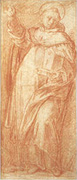
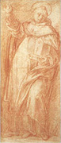

|  |
|---|
Textum Taurini 1951 editum
et automato translatum a Roberto Busa SJ in taenias magneticas
denuo recognovit Enrique Alarcón atque instruxit


|  |
|---|


[89867] Petrus de Alvernia, In Politic. continuatio, lib. 6 l. 1 n. 1 Postquam philosophus determinavit de principiis et causis corrumpentibus et salvantibus respublicas et in universali et in particulari, intendit nunc ostendere ex quibus et quomodo sunt instituendae. Et primo declarat ex quibus et quomodo instituendae sunt respublicae transgressae. Et in secunda parte ex quibus et quomodo respublica optima et recta in principio septimi, ibi, de politia optima. Respublicae autem transgressae erant tres. Paucorum, popularis et tyrannis: inter quas tyrannis pessima est, nec alicui expedit simpliciter, quia nihil malignitatis ei deficit, sicut dicebatur in quinto. Et ideo de ipsa non determinat ex quibus et quomodo sit instituenda. Unde tantum in isto sexto intendit determinare, qualiter aliae duae sint instituendae. Et dividitur in duas; quoniam in prima parte praemittit intentionem suam, et ordinem considerandi. In secunda cum dicit, hypothesis quidem igitur, prosequitur. Circa primum duo facit: quoniam primo dat intentionem suam. Secundo dat ordinem considerandi cum dicit, et primo de democratia. Circa primum duo facit. Primo enim continuans se quaedam dicta recolligendo, dat intentionem suam in universali. Secundo cum dicit, qualis quidem igitur democratia, in particulari. Circa primum duo facit. Primo recolligit quaedam determinata prius. Secundo cum dicit, quoniam autem fuerunt, tangit quae restant consideranda in universali. In prima dicit: in praecedentibus, puta in fine quinti huius, determinatum est, quae et quot species differentiae sunt eius quod consiliatur in republica, et etiam eius quod dominatur simpliciter, et etiam ipsorum principantium universaliter, et etiam iudiciorum, quae reddunt sententias disceptantibus. Iterum etiam dictum est, quae istarum cui reipublicae conveniunt principaliter, quia non omnia omnibus competunt. Iterum etiam dictum est ex quibus et qualibus causis et principiis, et quomodo se habentibus contingit salvari et corrumpi respublicas et in universali et in particulari.
[89868] Petrus de Alvernia, In Politic. continuatio, lib. 6 l. 1 n. 2 Deinde cum dicit quoniam autem tangit in universali quaedam quae restant consideranda; et dividitur in duas. In prima tangit illa. In secunda reddit causam cuiusdam dicti, cum dicit, haec enim combinata. In prima dicit, quod quia plures sunt species reipublicae sicut dictum est prius, puta popularis, et paucorum, et sic de aliis: adhuc etiam plures sunt species popularis, et plures etiam aliarum rerumpublicarum de quibus aliqua considerata sunt prius, si aliquid remanserit de illis non consideratum et non declaratum, et quod minus expediens est cognoscere, considerandum est nunc de illo, puta de institutione secundum unamquamque speciem. Item considerandus est modus, qui congruit unicuique illarum, et confert ad consequutionem finis uniuscuiusque; adhuc autem et commixtiones modorum rerumpublicarum.
[89869] Petrus de Alvernia, In Politic. continuatio, lib. 6 l. 1 n. 3 Deinde cum dicit haec enim reddit causam cuiusdam dicti immediate. Ad cuius intellectum sciendum, quod sunt quaedam partes materiales in habentibus materiam, quae non pertinent ad speciem; sicut aurum vel cuprum non pertinent ad speciem circuli. Alia autem sunt quae pertinent ad ipsam, sicut carnes et ossa ad speciem animalis vel hominis. Et quia tales partes ad speciem pertinent, ideo secundum diversitatem istarum accidit diversificari speciem. In republica sunt quaedam partes sic non pertinentes ad rempublicam, sicut iste homo vel ille, vel hoc officium vel illud: quaedam autem secundum speciem, sicut principans et consiliativum et iudicium, et sic de aliis; et ideo secundum distinctionem istorum diversificantur species reipublicae. Contingit autem commixtiones vel combinationes istarum fieri, puta quod accipiatur consiliativum unius et iudicium alterius, et sic de aliis; et secundum hoc contingit diversimode misceri respublicas. Et hoc est, quod ipse dicit, quod considerandae sunt combinationes partium pertinentium ad speciem diversarum rerumpublicarum. Istae enim partes diversimode combinatae faciunt diversitatem rerumpublicarum, ita quod istae quae sunt optimatum secundum aliquid videntur esse paucorum secundum aliquid quidem; et illae quae sunt respublicae secundum aliquid, videantur populares secundum aliud. Dico autem exponendo praedictas combinationes quae restant considerandae, et ab aliis sunt omissae; ut si in aliqua republica vel in aliqua civitate consilium et ea quae pertinent ad electionem principum accipiantur ex paucorum statu, id autem quod pertinet ad iudicia ex optimatum statu, aut ea quae sunt circa iudicia aut etiam circa consilium ex paucorum statu, ea vero quae ad electionem pertinent ex optimatum, aut secundum aliquem alium modum talem quo nunc accipiuntur omnia quae conveniunt uni reipublicae non ex propriis eius, sed ex his quae conveniunt aliis vel aliis. Secundum enim diversitatem istorum contingit diversimode misceri respublicas.
[89870] Petrus de Alvernia, In Politic. continuatio, lib. 6 l. 1 n. 4 Deinde cum dicit qualis quidem in speciali magis dat intentionem. Et primo recolligit iterum quaedam determinata prius. Secundo cum dicit, attamen oportet, declarat quae restant determinanda nunc in speciali. Primo igitur dicit, quod in praecedentibus, puta in quarto, dictum est qualis species status popularis, quali multitudini conveniat; et qualis species paucorum, quali multitudini insignium conveniat; et similiter de reliquis rebuspublicis dictum est quae cui vel qualibus conveniat; non enim quaelibet cuilibet expedit, sicut nec quodlibet genus fistulae cuilibet fistulatori, sed determinatum determinato.
[89871] Petrus de Alvernia, In Politic. continuatio, lib. 6 l. 1 n. 5 Deinde cum dicit attamen oportet tangit quae sunt consideranda nunc; dicens, quod quamvis ista considerata sint, tamen oportet manifestari non solum qualis respublica cui multitudini conveniat, sed etiam qualiter et ex quibus et quomodo unaquaeque illarum sit instituenda; et ideo de hac pertractandum est nunc breviter.
[89872] Petrus de Alvernia, In Politic. continuatio, lib. 6 l. 1 n. 6 Consequenter cum dicit et primo dat ordinem considerandi; et dividitur in duo. Quoniam primo tangit quod de populari statu primo est considerandum. Secundo cum dicit, sumendum autem, ostendit quo ordine sit considerandum de ea. In prima dicit, quod primo considerandum est ex quibus et quomodo instituendus sit popularis status. Simul enim quantum ad unitatem tractatus consequenter manifestum erit de republica quae opponitur illi, quam vocant paucorum potentiam. Post haec autem in sequenti tractatu dicemus de optima.
[89873] Petrus de Alvernia, In Politic. continuatio, lib. 6 l. 1 n. 7 Deinde cum dicit sumendum autem tangit ordinem considerandi de populari statu; quod facit primo. Secundo cum dicit, ex his enim, assignat rationem ordinis. In prima dicit, quod est considerandum ex quibus et qualibus instituenda sunt illa quae sunt sicut principia et hypotheses, et omnia quae assequuntur sicut proprietates vel accidentia ipsi; deinde determinandum est, ex quibus et qualibus instituatur.
[89874] Petrus de Alvernia, In Politic. continuatio, lib. 6 l. 1 n. 8 Deinde cum dicit ex his enim assignat rationem propositi ordinis; et dividitur in duas, secundum quod duas rationes assignat, et incipit secunda ibi, opportunum autem. In prima dicit, quod bene dictum est, quod prius considerandum est proprietates et accidentia popularis status, quoniam ex diversa compositione istorum contingit fieri plures modos popularis reipublicae differenter a seinvicem, et etiam species plures: propter enim duas causas contingit esse plures species ipsius. Quarum una dicta est prius, scilicet diversitas multitudinis: respublicae enim diversificantur secundum diversitatem eius quod principatur in eis, multitudo autem in populari republica principatur; et ideo secundum diversitatem multitudinis contingit eam diversificari. Est enim quaedam multitudo agricolarum, alia autem opificum, et tertia ministrorum quae mercedem accipit pro labore; in quibus si agricolarum multitudo accipitur cum secunda, puta cum opificibus seorsum; et iterum tertia multitudo, puta ministrorum cum duabus aliis seorsum, facient populares status differentes, non tantum secundum melius et deterius, sed etiam secundum speciem; quoniam ista combinatio et illa diversum ordinem multitudinis ad finem faciunt, et diversitas multitudinis in ordine ad finem diversitatem inducit secundum speciem popularis reipublicae. Alia autem causa est, de qua diximus nunc, quoniam in popularibus potentiis sunt quaedam hypotheses et accidentia propria diversa, quae diversimode composita diversas respublicas populares inducunt; puta si in aliqua accipiantur plura, in alia autem pauciora, in alia autem omnia; ista enim diversificant eas, sicut apparebit consequenter.
[89875] Petrus de Alvernia, In Politic. continuatio, lib. 6 l. 1 n. 9 Deinde cum dicit opportunum autem assignat secundam rationem; dicens, quod expediens est considerare principia et proprietates popularis status ad instituendam unamquamque speciem ipsius ad votum, et ad hoc ut aliquid dirigatur in ea: cognoscere enim principia et proprietates alicuius operabilis principium est ad operandum illud et dirigendum in eo. Illi autem qui respublicas quaerunt instituere volentes congregare omnia convenientia reipublicae ad instituendum unamquamque, peccant, sicut dictum est in quinto huius, ubi dictum est quae sunt salvantia et corrumpentia respublicas. Quaedam enim respublicae congregant omnia convenientia ad suppositiones, quaedam autem vel plura, quaedam pauciora, sicut iam dictum est prius. Nunc autem consequenter dicamus exigentias vel proprietates convenientes et consuetudines, et ea quae appetunt sicut fines vel ea quae sunt ad fines popularis status.
[89876] Petrus de Alvernia, In Politic. continuatio, lib. 6 l. 2 n. 1 Postquam philosophus praemisit intentionem suam, prosequitur intentum. Et circa hoc duo facit. Quoniam primo ostendit ex quibus et quomodo instituantur popularis status et paucorum. In secunda cum dicit, consequens autem est etc. determinat de principatibus pertinentibus ad huiusmodi respublicas. Circa primum duo facit. Primo ostendit ex quibus et quomodo instituatur status popularis. Secundo cum dicit, fere autem etc. ex quibus paucorum status sibi oppositus. Circa primum duo facit. Primo praemittit suppositiones et conditiones populares status. Secundo cum dicit, democratiis autem etc. determinat ex quibus et quomodo est instituenda. Circa primum, primo facit quod dictum est. Secundo cum dicit, quod maxime videtur etc. movet dubitationem. Circa primum duo facit. Quoniam in prima praemittit quasdam suppositiones status popularis. Secundo cum dicit, talibus autem praesuppositis etc. concludit multas conditiones ipsius. Circa primum duo facit. Quoniam primo praemittit unam suppositionem primam et principalem. Secundo cum dicit, libertatis autem etc., subdividit eam in duas. In prima igitur dicit, quod una et principalis suppositio status popularis est libertas: quod probat ex communi dicto aliorum; quia sicut omnes consueverunt dicere, ac si solum in ista republica cives participarent libertate. Dicunt enim quod omnes in statu populari intendunt libertatem aliqualiter. Si igitur dictum commune veritatem habet, oportet libertatem esse suppositionem in ipsa. Et est intelligendum quod libertas dicitur qua aliquid potest ex propria voluntate movere se et ad finem sibi positum: quod apparet, quia liber est, secundum philosophum, qui est suiipsius causa, vel in ratione moventis, inquantum ex propria voluntate movetur et ex propria ratione, vel etiam inquantum movetur vel agit gratia finis proprii non ad finem alterius. Accipitur etiam libertas pro ipsa operatione vel actu quo aliquis dicitur a se moveri vel agi ad finem proprium. Hoc autem, sive illo, sive hoc modo sumatur, aliqui habent ex naturali dispositione; et tales sunt liberi natura, sicut dicebatur in primo huius. Aliqui autem habent hoc ex ordine reipublicae quod non aguntur ab alio, quam a se, nec ad finem alterius, sed ex se et ad finem reipublicae. Et sic appropriant sibi popularis status fautores libertatem.
[89877] Petrus de Alvernia, In Politic. continuatio, lib. 6 l. 2 n. 2 Consequenter cum dicit libertatis autem subdividit; et ponit quosdam effectus ipsius. Et dividitur in duas, secundum duos effectus quos ponit, vel secundum duo membra in quae dividit. Secunda ibi, unum quidem igitur et cetera. In prima dicit, quod una pars libertatis vel unus effectus in populari statu est nullum simpliciter subiici vel principari, sed omnes secundum partem; ita quod quilibet secundum aliquod tempus subiiciatur, secundum aliud principetur, aut principetur uno principatu particulari et subiiciatur alii. Ratio autem huius est quoniam iustum populare est omnes habere de honoribus vel bonis communibus secundum aequalitatem quantitatis, non secundum dignitatem personae vel aequalitatem proportionis; sed tantum pauper quantum dives, tantum idiota quantum studiosus. Cum autem cuiuslibet iusti oporteat esse aliquem institutorem et conservatorem, et hoc sit illud quod principale est in multitudine civili, cum multitudo popularis sit principalis in populari statu, necesse est in ea multitudinem esse dominam huius iusti popularis. Ut quia finis in multitudine civili est illud, quod intendit principans, et iustum quod considerat in ordine ad finem, manifestum est quod necesse est illud esse finem in populari statu, et iustum, quod videtur multitudini. Dictum autem est prius, omnes debere habere aequale secundum quantitatem: et quia multitudo est domina iusti et simpliciter principatur in ea, et ipsa est maior egenorum quam divitum, accidit egenos magis principari in tali republica quam divites, quia dominans est quod videtur pluribus. Egeni autem sunt plures quam divites: quia igitur necesse est aliquos principari, non possunt autem omnes simul principari, necesse est omnes in parte principari et subiici. Unus igitur effectus vel signum libertatis est quod dictum est, quem omnes in populari statu ponunt, sicut terminum et finem in ea.
[89878] Petrus de Alvernia, In Politic. continuatio, lib. 6 l. 2 n. 3 Deinde cum dicit unum quidem ponit secundum effectum vel signum. Et primo ponit ipsum. Secundo cum dicit, hinc autem venit et cetera. Infert primum ex isto. In prima dicit, quod aliud signum vel effectus libertatis est vivere secundum voluntatem, ita quod unusquisque operetur secundum motum propriae voluntatis non coactus ab aliquo, nec determinatus ad aliud determinate operandum. Hoc enim est secundum, quod dicunt, opus libertatis: quod apparet quia opus servitutis est vivere, vel operari, non secundum voluntatem propriam sed secundum alterius libitum vel votum, non ad finem proprium, sed ad finem alterius: ergo per oppositum opus libertatis est operari secundum voluntatem, et ad finem proprium. Iste igitur est secundus terminus, quem ponunt populares in sua republica.
[89879] Petrus de Alvernia, In Politic. continuatio, lib. 6 l. 2 n. 4 Deinde cum dicit hinc autem infert primum ex secundo; dicens, quod ex isto effectu, qui est operari ut vult aliquis, sequitur primus effectus, scilicet non velle subiici, aut simpliciter sub nullo esse, si possibile esset. Sed quia hoc non est possibile, subiici scilicet, et principari omnes simpliciter, expedit subiici et principari secundum partem, et subiici et principari facit ad libertatem, quae attenditur in hoc, vel quantum ad hoc, quod omnes sunt aequales.
[89880] Petrus de Alvernia, In Politic. continuatio, lib. 6 l. 2 n. 5 Deinde cum dicit talibus autem concludit ex praedictis multas proprietates popularis status. Et dividitur in duas. In prima ponit eas. In secunda recolligit cum dicit, communia quidem et cetera. Circa primum tria facit. Quoniam primo ponit conditiones, vel proprietates, quae attenduntur circa assumptionem principatus, et eorum qui principantur, et ex quibus et quando. Secundo cum dicit, deinde praemiare etc. illas quae attenduntur quantum ad remunerationem principantium. Tertio cum dicit, praeterea etc., quae attenduntur quantum ad conditiones eorum qui sunt in hac republica. Circa primum facit duo. Quoniam primo tangit conditiones pertinentes ad assumptionem principatus, scilicet tempus et potestatem. Secundo cum dicit, principatuum autem etc., tangit qui debet esse maximum principatus in hac republica. Circa primum primo tangit eas quae pertinent ad assumptionem principatus. Secundo cum dicit, non bis eumdem etc. eas quae pertinent ad durationem principatus. Tertio cum dicit, congregationem esse dominam etc., eam quae pertinet ad potentiam eius. Circa primum tangit quatuor conditiones. Dicens primo, quod praedictis suppositis in populari statu, et multitudine principante in eodem, necesse est has conditiones, quae sequuntur, observari in ea. Primo quidem, omnes principatus tam maiores quam minores eligere, idest accipere ex omnibus indifferenter, non considerando ad dignitatem aliquam: sic enim omnes magis habebunt quoddam aequale quod est iustum in eo. Secundo omnes principari super unumquemque, hoc est omnes coniunctim, super unumquemque divisim; et iterum unumquemque divisim, cum acceptus fuerit in alio et alio principatu, divisim super omnes. Sic enim omnes principabuntur et subiicientur secundum partem; id autem est effectus libertatis primus. Tertio principatus eligi per sortem, vel universaliter omnes, vel saltem illos, in quibus non indigetur multa sapientia et prudentia, puta ducatum exercitus, vel consilium. Tales enim non expedit eligi sorte. Contingeret enim ad tales principatus assumi idiotam quemcumque, quod esset periculosum reipublicae. Quarto principatus assumi, non ab aliqua excellentia vel dignitate virtutis vel divitiarum, aut saltem a minima: quod dicit propter primam speciem popularis status, in qua assumuntur ad principatum ab aliqua dignitate divitiarum, vel virtutis, sicut apparuit in quarto: sic enim magis aequales erunt, et minus subiicientur.
[89881] Petrus de Alvernia, In Politic. continuatio, lib. 6 l. 2 n. 6 Deinde cum dicit non bis ponit conditiones duas pertinentes ad rationem principatus; dicens primo, quod in republica hac expediens est, eumdem bis non principari in aliquo principatu, vel raro et paucis principari; sic enim plures poterunt attingere ad principatum, praeterquam in ducatu exercitus, in quo periculosa est mutatio frequens, propter experientiam longam, quae exigitur in illo. Secundo expedit statuere in eadem, et brevis durationis esse principatus, vel simpliciter omnes, vel illos saltem, qui habent iudicare de omnibus casibus, quantum ad omnes cives, vel saltem de pluribus, vel de maximis et principalissimis, sicut de correctione principatuum aliorum, et de ordine reipublicae et commutationibus regulandis secundum legem iustitiae. Expedit autem principatus esse brevis temporis, si possibile sit, ut plures attingere possint ad eos, et principari secundum partem. Maxime autem hoc expedit in magnis, ne nimis ditati insurgant contra multitudinem tyrannizantes.
[89882] Petrus de Alvernia, In Politic. continuatio, lib. 6 l. 2 n. 7 Deinde cum dicit congregationem esse tangit conditionem pertinentem ad potentiam. Dicens quod expediens est in huiusmodi republica congregationem multitudinis esse dominam simpliciter omnium in hac republica. Principatus autem expedit habere nullius dominium si possibile sit, aut saltem paucorum, et nullo modo maximorum. Sic enim magis salvabitur aequalitas multitudinis: si enim principatus dominarentur simpliciter, aut in magnis, excederent alios praeter proportionem et aequalitatem, quae in ipsa intenditur.
[89883] Petrus de Alvernia, In Politic. continuatio, lib. 6 l. 2 n. 8 Deinde cum dicit principatuum autem manifestat quis principatus magis necessarius est in ipsa. Dicens quod principatus maxime necessarius in populari statu est illud quod vocatur consilium, quod habet potestatem deliberandi de magnis et arduis. Cuius ratio est, quia multitudo popularis, quae in ipsa dominatur, ut in pluribus, imprudens est et sine virtute; et ideo sequitur impetum voluntatis in operationibus suis: quare si debeat recte agere, oportet habere dirigens et regulans: hoc autem est consilium: et ideo consilium maxime necessarium est in statu populari, praeterquam in illa, in qua laborantes in communibus, praemium accipiunt magnum. Haec enim multitudo removet potentiam huius principatus, et reducit ad se omnia iudicia et deliberationes propter pretium, sicut dictum fuit in praecedentibus in quarto huius.
[89884] Petrus de Alvernia, In Politic. continuatio, lib. 6 l. 2 n. 9 Deinde cum dicit deinde praemiare ponit conditionem quae pertinet ad retributionem: dicens quod post ea quae dicta sunt, expediens est remunerari omnes venientes ad congregationes, ut libentius veniant, et ad iudicia ut plures iudicent, et firmior sit sententia, et principatus, ut fidelius et magis laborent: et hoc dicunt si possibile est civitati. Si autem non est possibile omnes remunerari, saltem oportet praemiare principatus et iudicia, et consilia, et congregationes maximas et praecipuas et principatus cum quibus necesse est alios plures civitatis convivere. Tales enim principatus nullus acciperet propter magnitudinem expensarum, nisi bene praemiaretur, sicut est dux exercitus.
[89885] Petrus de Alvernia, In Politic. continuatio, lib. 6 l. 2 n. 10 Deinde cum dicit adhuc autem ponit proprietatem, quae pertinet ad conditionem gubernantium. Et primo facit hoc. Secundo cum dicit, in principatibus autem etc. resumit quamdam conditionem dictam prius de principatu, ut aliquid addat. In prima dicit: quoniam status paucorum, et popularis sunt respublicae adinvicem contrariae quodammodo, et contrariorum sunt contrariae proprietates, oportet eas proprietates habere contrarias. Cum igitur in paucorum statu gubernantes determinentur per nobilitatem generis, et per divitias et per virtutem, necesse est, quod gubernantes in populari statu determinentur per contraria; puta per ignobilitatem generis, paupertatem et ignorantiam, seu per sordidum opificium, ita quod sicut in paucorum statu sunt principantes nobiles et divites et virtuosi, sic in statu populari viles et pauperes et inordinati.
[89886] Petrus de Alvernia, In Politic. continuatio, lib. 6 l. 2 n. 11 Deinde cum dicit in principatibus resumit quamdam proprietatem dictam prius de principatu, et adiungit alias; dicens primo, quod expedit in populari statu nullum esse principatum durationis perpetuae. Si enim esset aliquis perpetuus, pauciores possent attingere ad ipsum, et habere aequale et populare, et iterum possent ditari improportionabiliter, et per divitias et potentiam tyrannizare. Adiungit autem, quod si aliquis principatus deviet vel declinet ab eo quod ordinatum est in antiqua lege ipsorum, amoveatur ab eo potentia vel principatus secundum legis ordinationem: iterum si fuerint aliqui principatus eligibiles, expedit mutare modum assumptionis eorum, et facere quod accipiantur sorte: sic enim magis assumentur ex quibuscumque. Sed hoc est intelligendum de illis principatibus in quibus non indigetur prudentia magna et experientia, sicut est consilium et ducatus exercitus; tales enim oportet eligere considerando ad dignitates praedictas, sicut prius dixit philosophus.
[89887] Petrus de Alvernia, In Politic. continuatio, lib. 6 l. 2 n. 12 Deinde cum dicit communia quidem recolligit dicta addendo causam; dicens quod ea quae dicta sunt, sunt quaedam communes proprietates popularis status. Omnes autem huiusmodi proprietates quae videntur esse popularis status, et ordinatio populi in ipso, sequuntur ex definitione iusti popularis prius posita, quae est omnes habere aequale secundum quantitatem, non secundum dignitatem aliquam, aequale enim secundum quantitatem est non magis principari divites, quam pauperes, nec virtuosos, quam idiotas, nec aliquos solitarios esse dominos, sed omnes aequaliter secundum numerum; si enim hoc modo se habeant, existimabunt se habere secundum aequalitatem et etiam libertatem.
[89888] Petrus de Alvernia, In Politic. continuatio, lib. 6 l. 3 n. 1 Postquam philosophus praemisit suppositiones et conditiones popularis status, in parte ista movet quamdam dubitationem. Et circa hoc tria facit. Primo enim movet eam. Secundo, circa eius dissolutionem tangit opinionem quorumdam, et reprobat, ibi, aiunt enim demotici et cetera. In tertia cum dicit, quae igitur utique, solvit eam secundum intentionem suam. In prima igitur movet dubitationem, quae oritur ex praecedentibus. Dixerat enim, quod si omnes aequaliter principentur, non magis dives quam pauper in populari statu habebunt secundum aequalitatem et libertatem. Dicit igitur, quod illud quod dubitationem habet ex praecedentibus est hoc, quomodo scilicet, cum in qualibet civitate vel republica, etiam populari statu, sint divites et pauperes, habebunt tam hi quam illi illud quod est aequale et iustum: utrum scilicet in distribuendis honoribus tantum oporteat distribuere vel dare mille pauperibus, quantum quingentis divitibus; et ipsos mille tantam habere potestatem in tractatibus communibus, quantam habent quingenti divites. Aut non secundum hunc modum, sed accipiendo mille pauperes ex una parte et quingentos ex alia, dividendo secundum modum praedictum, ulterius ex quingentis divitibus accipere aliquos paucos per electionem, deinde ex mille pauperibus aliquos similiter paucos qui in eadem proportione se habeant ad ipsos mille de quibus eliguntur, sicut illi pauci qui accipiuntur ex istis quingentis ad illos quingentos; et isti simul congregati sunt domini in dividendo bona communia, in iudicando et eligendo. Est igitur dubitatio, utrum aliquod istorum iustum et aequale in republica populari, aut nulla istorum: sed magis omnia attribuere maiori multitudini, ita quod multitudo maior sit omnium domina.
[89889] Petrus de Alvernia, In Politic. continuatio, lib. 6 l. 3 n. 2 Deinde cum dicit aiunt enim tangit quorumdam opinionem primo. Secundo cum dicit, habent autem ambo etc., reprobat utramque. In prima dicit, quod de ista dubitatione aliter videtur popularibus aliter dominantibus in paucis. Populares enim dicunt illud esse iustum et aequale simpliciter quod videtur pluribus: multitudo enim principatur in tali republica; et ideo iustum attenditur per comparationem ad ipsam, sicut dicebatur prius; in paucorum potentia autem illud dicunt esse iustum simpliciter quod videtur habentibus ampliores divitias. Dicunt enim debere omnia determinari secundum habitudinem ad divitias quae sunt principale in ea.
[89890] Petrus de Alvernia, In Politic. continuatio, lib. 6 l. 3 n. 3 Deinde cum dicit habent autem reprobat utramque. Et primo secundum. Secundo cum dicit, si autem quodcumque etc. primum. In prima dicit, quod utraque istorum quae dicta sunt inaequalitatem quamdam habent in re et iniustitiam in comparatione ad finem. Si enim illud est iustum fieri in civitate quod videtur divitibus paucis existentibus, tunc sequitur rempublicam converti in tyrannidem. Cuius ratio est, quoniam si illud quod est iustum videtur ditioribus, et oportet omnia secundum quantitatem divitiarum determinari, tunc si unus habeat ampliorem substantiam quam alii, iustum erit quod videtur huic soli, et omnia oportet determinari secundum voluntatem eius, et per consequens ipsum solum principari secundum voluntatem eius. Hoc autem est tyrannis: si igitur omnia oporteat determinari secundum iudicium divitum, respublica convertetur in tyrannidem.
[89891] Petrus de Alvernia, In Politic. continuatio, lib. 6 l. 3 n. 4 Deinde cum dicit si autem improbat primum: dicens, quod si illud esset iustum quod videtur pluribus, et oportet sequi iudicium plurium; cum plures habeant potentiam maiorem, et etiam sequantur impetum voluntatis in iudicando, convertentur ad opera iniustitiae diripientes ea quae sunt divitum paucorum existentium, sicut dictum est in quarto prius.
[89892] Petrus de Alvernia, In Politic. continuatio, lib. 6 l. 3 n. 5 Deinde cum dicit quae igitur dissolvit eam secundum intentionem suam primo. Secundo cum dicit, sed de aequali etc., removet obiectionem quae posset fieri. In prima dicit resumendo dubitationem et dando intentum in determinando eam, dicens quod ex definitione vel determinatione iusti sive aequalis quam ponunt utrique accipiendum est quae sit aequalitas sive iustitia quam intendunt, secundum quam oportet distribuere singula. Conveniunt enim in hoc utrique, quod iustum est esse illud dominans et principans in republica quod videtur pluribus partibus reipublicae. Hoc enim supponatur, non tamen simpliciter, sed cum determinatione quadam. Duae enim sunt partes ex quibus civitas de necessitate componitur; scilicet divites et pauperes. Quod igitur videbitur istis et illis simul consentientibus ut pluribus, non dico totius multitudinis, sed pluribus de divitibus et pluribus de pauperibus, hoc sit principans et fiat in tota republica. Si autem contingat, quod contrarientur adinvicem, ita quod non omnibus divitibus idem videatur, sed quibusdam unum, quibusdam aliud, similiter non omnibus pauperibus, sed quibusdam unum quibusdam aliud: verbi gratia, si ponamus quod sint decem divites et viginti pauperes, unum autem videatur faciendum sex divitibus, et quinque pauperibus adiunctis eis, oppositum autem videatur quindecim pauperibus et quatuor divitibus, tunc iustum determinandum erit non secundum praedictum modum, sed secundum aliquam excellentiam aliam, vel virtutis, vel desiderii ad bonum commune. Et tunc illud quod videbitur parti, quae excellit secundum illud, collatione facta, iustum erit. Si autem aequales inveniantur, puta in virtute, tunc remanet dubitatio eadem si debentes iudicare in iudicio sint divisi in duas partes, ita quod non inveniatur excellentia, quorum sententiae standum erit? Et tunc in utroque istorum aut determinandum est sorte cui illorum sit, aut aliquo alio accidente simili sorti.
[89893] Petrus de Alvernia, In Politic. continuatio, lib. 6 l. 3 n. 6 Deinde cum dicit sed de aequali removet obiectionem quae posset fieri. Diceret enim aliquis quod electio principatus et distributio honorum communium maxime sunt in civitate: maxima autem committere sorti et viae per quam contingit accipi deteriorem, inconveniens est: ergo inconveniens videtur quod dictum est, quod ubi non invenitur praeeminentia sit sortiendum. Hoc intendens removere, dicit, quod cum difficillimum sit invenire aequalitatem quid sit iustum et aequale in casibus praedictis; et determinare secundum rationem rectam, tamen melius est per sortem dirimere controversias, quam permittere quod soli divites principentur: semper enim de duobus malis minus malum praeeligendum est: malum est autem sorti committere et solos divites principari: minus autem malum est sorti committere, quam divites principari: quia pauperes, quos quandoque contingit per sortem principari, magis volunt communiter iustitiam et aequalitatem quam divites. Divites enim ex ipsa abundantia divitiarum inclinantur ad contumeliam et elationem, et ad alia iniuriosa; et ideo nihil curant de iustitia: propter quod si oporteat alterum ipsorum eligi, magis est eligendum committere sorti, quam permittere divites solos principari in statu populari.
[89894] Petrus de Alvernia, In Politic. continuatio, lib. 6 l. 4 n. 1 Postquam philosophus praemisit hypotheses et proprietates status popularis; intendit hic determinare ex quibus et quomodo species ipsius instituantur. Et dividitur in duas; quoniam in prima parte ostendit ex quibus et quomodo instituitur optima respublica popularis. In secunda cum dicit, quomodo ergo etc., ex quibus et quomodo aliae. Prima in duas. Quoniam primo facit quod dictum est. Secundo cum dicit, ubi autem et accidit etc., ostendit ubi facile est eam instituere. Prima dividitur in partes tres. Quoniam in prima parte dicit ex quibus est optima respublica popularis. In secunda cum dicit, ad instituendum autem etc., declarat quibus legibus firmanda et instituenda. In tertia cum dicit, post agricolarum autem etc., declarat qualiter aliae multitudines populares se habent ad illam, ex qua instituitur optima respublica popularis. In prima duo facit. Quoniam in prima parte declarat ex quibus est optima respublica popularis. In secunda cum dicit, propter quidem enim etc., probat quoddam suppositum. In prima primo facit quod dictum est. In secunda cum dicit, quare et facere etc., concludit corollarium. In prima dicit, cum sint quatuor species status popularis, optima est quae est prima secundum ordinem inter illas, sicut dictum est prius. Optima enim respublica simpliciter regnum est in qua unus principatur; deinde status optimatum in quo pauci virtuosi. Deinde autem respublica in qua adhuc plures bellicosi. Deinde autem haec species popularis status in qua plures agriculturam colentes principantur. Deinde autem aliae species ipsius plus et plus deficientes ab ea, sicut dictum est in quarto huius. Ista autem est antiquissima omnium statuum popularium, et antiquior multitudo et magis naturalis est agricultiva. Dixit autem ipsam primam esse, quia est ex prima multitudine et optimo populo, cuiusmodi est terrae cultivus, siquis supponat distinctionem multitudinis popularis in terrae cultivam et non terrae cultivam. Et consistit virtus rationis suae in hoc. Optima et prima respublica popularis est ex optima et prima multitudine populari: optima autem et prima multitudo est terrae cultiva; ergo prima et optima est respublica popularis ex multitudine agricultivae.
[89895] Petrus de Alvernia, In Politic. continuatio, lib. 6 l. 4 n. 2 Deinde cum dicit quare et facere concludit corollarium; dicens, quod quia optimus populus est agricultivus; ideo de facili contingit fieri optimam rempublicam popularem, ubi est talis populi multitudo: ex optima enim materia bene disposita contingit fieri optimum compositum, et in his quae fiunt natura, et in his quae fiunt arte.
[89896] Petrus de Alvernia, In Politic. continuatio, lib. 6 l. 4 n. 3 Deinde cum dicit propter quidem probat quod supposuit; scilicet quod multitudo agricultiva sit optimus populus. Et primo facit hoc. Secundo cum dicit, quod quidem igitur etc., concludit conclusionem principaliter intentam. Primum probat ex tribus: et secundum hoc potest dividi in tres partes. Primum enim probat quod agricultiva multitudo est optima, quia non est machinativa. Secundo cum dicit, propterea autem et cetera. Quia non est concupiscitiva. Tertio cum dicit, adhuc autem quod domini sunt etc. quia non est ambitiosa. In prima parte dicit, quod multitudo agricultiva, quia non habet divitias multas, non multum potest vacare ab operationibus exterioribus; sed necesse est intendere ad culturam terrae ex qua sustentatur, et ad alia necessaria; et quia non potest vacare ab exterioribus, non appetit facere congregationes; et ideo minus machinari potest. Solent enim in congregationibus propter mutuam collocutionem et adinvicem confidentiam machinari inveniendo vias et modos insurgendi contra divites aut principantes. Et quia minus machinativa est, melior est ad politizandum. Secundo cum dicit, cum enim laborandum sit illis circa necessaria etc. probat quod est optima, quia non est concupiscitiva; dicens quod huiusmodi multitudo, propter hoc quod non habet necessaria ad bene vivendum, necesse habet intendere circa exteriora opera exterius in regione; et quia operationibus exterioribus intendunt, minus concupiscunt aliena. Habitantes enim exterius in regione, intendentes propriis operibus, non percipiunt divitias et bona principantium; et quia non advertunt, minus concupiscunt. Imo magis delectabile est eis intendere negotiationi circa propria, quam intromittere se de republica aut principatu, etiam ubi tunc non contingit multum lucrari in principatu vel republica; multitudo enim popularis magis intendit et appetit lucrum proprium quam honorem. Hoc enim est eis magis necessarium. Et signum eius quod dictum est, est quoniam multi tales antiquitus tyrannides crudeles sustinuerunt et status paucorum potentatus, et adhuc etiam multi sustinent, cum non prohibentur ab operibus propriis, nec multum aufertur de substantia eorum: sic enim intendentes propriis operibus, quidam eorum faciliter fiunt divites, alii vero non egentes: et quia sic aliena non concupiscunt, meliores sunt ad gubernandum, quia minus insurgunt et minus rapiunt aut furantur: hoc enim erat una causa corruptionis rerumpublicarum determinata in quinto huius.
[89897] Petrus de Alvernia, In Politic. continuatio, lib. 6 l. 4 n. 4 Deinde cum dicit adhuc autem probat idem propter hoc, quod non est ambitiosa. Et primo facit hoc. Secundo concludit corollarium cum dicit, quapropter utile est. In prima parte dicit, quod si huiusmodi multitudo habeat aliquem appetitum honoris, quod necesse est, quia homines naturaliter honorem appetunt, ut apparet secundo rhetoricae, appetitui eorum satis fit per hoc quod in quibusdam rebuspublicis popularibus dominium habet in eligendo et corrigendo principatus, quod est maximum. In aliis autem popularibus statibus, quamvis non attingant ad electionem principatuum, cum principatus per partes eligibiles sunt ex omnibus indifferenter, sicut in Mantinea, ubi hoc servabatur, in aliis autem potestatem habet huiusmodi multitudo super consilium reipublicae quod ordinat de omnibus, et hoc ipsum quod dominium habet super ipsum consilium multis est sufficiens ad supplendum appetitum praedictum. Et est opinandum, quod ista quae dicta sunt, scilicet multitudinem habere potestatem in eligendo et corrigendo principatus, et ipsos attingere ad aliquos principatus minores: et habere dominium super consilium, est sicut quidam ornatus et bona dispositio status popularis, sicut fuit in civitate Mantinea praedicta.
[89898] Petrus de Alvernia, In Politic. continuatio, lib. 6 l. 4 n. 5 Deinde cum dicit propter quod concludit ad manifestationem eius quod dictum est, quoddam corollarium primo. Secundo cum dicit, necesse autem politizantes etc. assignat rationem eius. Primo ergo dicit, quod quia ea quae dicta sunt, sunt ornatus quidam status popularis, et bona dispositio, dispositio expediens est in praedicta specie status popularis, et consuevit observari in ea, agricultivam multitudinem habere potestatem super electione principatus et correctione, et iudicare cum erraverint, et principatus maiores eligi ab ea ex eis, qui habent honorabilitates maiores, vel virtutum vel divitiarum, vel ex maioribus secundum nobilitatem; aut non eligi per eos qui habent tales honorabilitates magnas, sed eos qui possunt intendere, non coacti propter indigentiam circa necessaria vacare.
[89899] Petrus de Alvernia, In Politic. continuatio, lib. 6 l. 4 n. 6 Deinde cum dicit necesse autem assignat rationem huius dicti primo. Secundo cum dicit, itaque necesse est infert corollarium ex ipsa. In prima parte dicit, quod si hoc observetur, quod dictum est, necesse erit in tali republica optime gubernare; ex hoc enim multae utilitates contingent in republica. Primo quidem ex parte principis; sic enim magistratus per meliores regentur, cum assumuntur ab aliqua honorabilitate: iterum ex parte populi contingit populum consistere, et non insurgere, nec etiam invidere excellentibus viris et insignibus sufficiet haec ordinatio. Si enim principatus assumantur ab honorabilibus, non subiicientur deterioribus ipsis, si quidem eos non contingat principari; iterum principantes magis iuste principabuntur, considerantes quod sunt alii in republica qui possunt corrigere eorum delicta si iniuste egerint. Hoc enim expediens est in tali statu populari corrigere et suspendere delictum principantium, ita quod non liceat eis facere quodcumque videbitur ipsis. Habens enim potestatem agendi quodcumque videtur ei, non habet potentiam observandi secundum rationem excessus qui sunt in unoquoque hominum.
[89900] Petrus de Alvernia, In Politic. continuatio, lib. 6 l. 4 n. 7 Deinde cum dicit quare necessarium ex istis concludit corollarium; dicens quod ex his, quae dicta sunt, si observentur, necessarium est accidere in republica maxime perfectum, scilicet bonos et iustos principari, et non delinquere, timentes punitionem et correctionem; et multitudinem nihil minus habere quam debet, est enim domina maiorum.
[89901] Petrus de Alvernia, In Politic. continuatio, lib. 6 l. 4 n. 8 Deinde cum dicit quod quidem concludit conclusionem principaliter intentam; dicens quod manifestum est ex dictis, quod haec species status popularis quae dicta est, optima est; et propter quam causam; quoniam propter hoc, quod populus ex quo constituitur, optimus est.
[89902] Petrus de Alvernia, In Politic. continuatio, lib. 6 l. 4 n. 9 Deinde cum dicit ad instituendum declarat quibus legibus utendum est ad consistentiam ipsius; et dividitur in partes quatuor, secundum quatuor leges, quas dicit expedire ad consistentiam ipsius. Secunda ibi, erat et quem dicunt antiquitus et cetera. Tertia cum dicit, est autem et cetera. Quarta ibi, hunc autem oportet et cetera. In prima dicit, quod ad instituendum populum agricultivum in populari statu praedicto, sunt utiles quaedam leges apud antiquos quosdam positae. Prima quidem est, non licere possidere aliquem in civitate quantamcumque quantitatem terrae, sed secundum mensuram determinatam: nam si liceret possidere quantumcumque possent acquirere, et ditarentur nimis, et non remaneret populus agricola. Aut si permittatur habere quantumcumque mensuram terrae, non tamen in loco propinquo municipio civitatis, sed in remoto magis; hoc enim modo necesse haberet magis habitare in loco remoto a civitate quam in ipsa, et minus posset machinari et nocere.
[89903] Petrus de Alvernia, In Politic. continuatio, lib. 6 l. 4 n. 10 Deinde cum dicit erat autem ponit secundam legem. Et dicit, quod antiquitus statutum fuit in multis civitatibus, et lege ordinatum, quod aliquid quod ad propositum expedit, scilicet, non licere vendere vel alienare primas sortes quas acceperunt a progenitoribus, sicut filiis Israel non licebat secundum legem alienare simpliciter haereditates, sed tantum obligare ad tempus; sic enim per alienationem possessionum aliqui non efficiebantur pauperes nec alii per acquisitionem ditiores praeter proportionem.
[89904] Petrus de Alvernia, In Politic. continuatio, lib. 6 l. 4 n. 11 Deinde cum dicit est autem ponit tertiam; dicens, quod est quaedam alia lex quam dicunt fuisse Oxyli legislatoris, quae eamdem potentiam habet cum praecedenti; scilicet non mutuare aliquid super portionem terrae quam aliquis habet, nec etiam ipsam posse obligare: et est eadem ratio istius legis et praecedentis, nisi quod ista magis restringit quam illa. Illa enim prohibet alienationem terrae simpliciter in qua transfertur dominium, ista autem obligationem retento dominio etiam.
[89905] Petrus de Alvernia, In Politic. continuatio, lib. 6 l. 4 n. 12 Deinde cum dicit nunc autem ponit quartam; dicens, quod adhuc oportet populum agricolam dirigere secundum legem et statuta Aphytalorum, idest illius gentis; ipsa enim utilis est ad hoc; illi enim quamvis multi existerent, et haberent paucam terram, omnes erant agricultores: illi enim si haberent terras vel possessiones ultra determinatam mensuram in lege, dabant ad pretium vel ad censum pauperibus vel minus habentibus, non totam, sed dividentes eas secundum aliquas partes; et retinebant sibi quantum determinatum erat a lege, residuum tradentes secundum dictum modum, ut sic etiam pauperes per terram acceptam ad censum aliqualiter venirent ad aliquem excessum divitiarum.
[89906] Petrus de Alvernia, In Politic. continuatio, lib. 6 l. 4 n. 13 Deinde cum dicit post agricolarum declarat qualiter multitudines populares aliae se habent ad istam; et dividitur in duas. In prima declarat, quod multitudo pastoralis melior est post istam. In secunda cum dicit, aliae autem omnes etc. declarat quod omnes aliae deteriores sunt ipsa. In prima parte dicit quod optima multitudo popularis post agricultivam est illa, quae est ex pastoribus viventibus ex pecoribus. In multis enim consimiliter se habet ad agricultivam; sicut enim illa necesse habet immorari extra civitatem circa agricultivam, sic ista circa custodiam et procurationem animalium. Item ista multitudo est magis exercitata in actionibus bellicis secundum habitus; sunt enim exercitati in custodiendo a lupis et latronibus. Item corpora habent bene disposita, et sunt fortes secundum corpus, assuefacti frigoribus, et exercitati circa venationes: tales autem bene dispositi sunt ad actus bellicos: unde Vegetius, in libro de re militari, dicit meliores milites eligendos esse ex venatoribus et carnificibus et fabris malleatoribus.
[89907] Petrus de Alvernia, In Politic. continuatio, lib. 6 l. 4 n. 14 Deinde cum dicit aliae autem declarat quod aliae multitudines deteriores sunt multo. Ista autem dividitur in duas, secundum quod hoc probat per duas rationes. Quarum secundam ponit cum dicit, adhuc autem. In prima dicit quod omnes aliae multitudines popularis status, puta mercenariorum in suis operationibus, et forensis quae negotiatur circa forum venalium et vilium personarum, quae locat opera sua mercede, sunt multo deteriores his quae dictae sunt; parum enim participant de vita, quae est secundum rationem; et nullae operationes eorum secundum quod huiusmodi, sunt exercitantes ad virtutem. Contrarium autem invenitur in praedictis multitudinibus; quare istae sunt multo deteriores illis.
[89908] Petrus de Alvernia, In Politic. continuatio, lib. 6 l. 4 n. 15 Deinde cum dicit adhuc autem ponit secundam rationem; dicens, quod praeter illud quod dictum est, multitudo forensis et mercenaria, quae circa municipium civitatis moratur, ut in pluribus volunt facere congregationes, in quibus colligationes et conspirationes faciunt contra principem, et etiam perverse sententiant, propter hoc quod ab ipsis congregationibus lucrum recipiunt. Ista autem sunt corruptiva reipublicae; et ideo peiores sunt ad gubernandum. Terrae cultores autem qui habitacula habent dispersa per regiones iuxta terras quas excolunt, non conveniunt libenter ad huiusmodi congregationes, quia per hoc retardarentur ab operibus necessariis, nec indigent similiter hac congregatione, propter hoc quod magis habent ad vitam necessaria curare.
[89909] Petrus de Alvernia, In Politic. continuatio, lib. 6 l. 4 n. 16 Deinde cum dicit ubi autem concludit ex praecedentibus, ubi contingit fieri bonam rempublicam popularem. Et primo facit hoc. Secundo concludit documentum cum dicit, quare oportet. Dicit igitur primo, quod si in aliquo loco regio sic sit disposita, aut terra cultiva multum remota sit a municipio civitatis, facile est in illa civitate bonum statum popularem facere et instituere. Cuius ratio est, quia multitudo agricolarum cogitat aedificare in locis magis remotis a civitate et habitare in illis propter quod raro venient ad congregationes; et ideo contra principantes non machinabuntur, et ipsi principantes in pace principabuntur.
[89910] Petrus de Alvernia, In Politic. continuatio, lib. 6 l. 4 n. 17 Deinde cum dicit quare oportet concludit documentum, quasi ad remotionem obiectionis quae posset fieri. Diceret enim aliquis quod quamvis agricolae non multum curent venire ad congregationes propter causam praedictam, forensis tamen multitudo et mercenaria volent frequenter facere congregationes; et incidet inconveniens contra praedicta. Quasi ad huius remotionem dicit quod si turba forensis et mercenaria saepe velit congregari, expedit ordinari per legem vel tenere per consuetudinem non facere congregationes aliquas in quibus habeant potestatem de magnis, non vocatis illis, qui habitant extra civitatem in regione: ex hoc enim sequuntur duo commoda. Primum, quod pauciores erunt congregationes: illi enim non saepe convenire possunt propter remotionem et necessaria. Secundo, quia isti minus malitiosi sunt et meliores, ut frequentius reprimunt aliqualiter malitiam et astutiam forensis multitudinis.
[89911] Petrus de Alvernia, In Politic. continuatio, lib. 6 l. 5 n. 1 Postquam philosophus declaravit ex quibus et quomodo instituenda est optima respublica popularis, declarat ex quibus et quomodo sunt instituendae aliae species ipsius deteriores vel inordinatiores; et circa hoc duo facit. Primo enim breviter tangit ex quibus et quomodo instituantur praedictae species. In secunda cum dicit, ultimam autem etc. insistit circa ultimam et inordinatissimam. In prima parte dicit, quod ex praedictis manifestum est, quomodo instituenda sit optima respublica popularis, quantum ad bonam ordinationem, et primam secundum naturam. Ex quo potest esse manifestum quomodo aliae species ipsius sint instituendae. Si enim optima respublica popularis ex multitudine optima instituenda est, et secundum ordinationem optimam sibi convenientem, cum aliae deficiant ab ipsa, quaedam minus et quaedam plus, manifestum est quod oportet transgrediendo et a bona multitudine deteriorem accipiendo multitudinem et a recta ordinatione permittendo maiorem inordinationem secundum plus et minus, ita quod minus inordinata respublica popularis post primam sit ex multitudine minus inordinata et magis inordinata ex magis inordinata; et maxime inordinata, puta ultima, ex maxime inordinata: sic enim differunt species status popularis secundum quod apparuit in quarto huius.
[89912] Petrus de Alvernia, In Politic. continuatio, lib. 6 l. 5 n. 2 Deinde cum dicit ultimam autem insistit circa ultimam. Et primo tangit quod non est bene mansiva de se. Secundo cum dicit, ad firmandum autem etc. declarat ex quibus maxime contingit eam firmare. In prima dicit, quod ultima species popularis status non potest bene sustineri a tota civitate, puta a divitibus et pauperibus nobilibus et ignobilibus, nisi sit bene ordinata legibus et consuetudinibus convenientibus ei. Et ratio huius est, quia in hac republica populari tota multitudo, quaecumque sit, in civitate principatur, sicut aliquis unus, et secundum quod ei videtur. Nunc autem huiusmodi multitudo quantum ad maiorem sui partem imprudens est et inordinata et in operibus suis sequitur impetum magis quam rationem: propter quod opprimunt maiores et corrumpunt iudicia, ex quo contingit corruptio reipublicae. Quae autem sunt quae possunt corrumpere hanc rempublicam et etiam alias respublicas in universali et in particulari dicta sunt prius pro maiori parte fere. Dicit autem fere, quia possunt esse aliqua, quae prius non tangebantur.
[89913] Petrus de Alvernia, In Politic. continuatio, lib. 6 l. 5 n. 3 Deinde cum dicit ad firmandum ostendit per quae contingit firmare huiusmodi rempublicam. Et dividitur in partes duas. Quoniam primo docet per quae contingit eam firmare intendendo ipsam. Secundo cum dicit, est autem opus, per quae contingit eam firmari remittendo. Circa primum ponit quatuor observanda per quae contingit eam firmare intendendo. Et secundum ponit cum dicit, adhuc autem et talia. Tertium cum dicit, adhuc autem tyrannica. Quartum cum dicit, et vivere ut quis vult et cetera. Circa primum ponit primo documentum illud. Secundo cum dicit, consueverunt quidem igitur etc. docet ipsum moderari. In prima dicit, quod principes in hac republica populari ad faciendum eam firmiorem et ad faciendum multitudinem popularem valde potentem, consueverunt adiungere plurimos extraneos, et aliquando aliquos qui non sunt legitimi cives, sed spurii qui sunt ex alterutro cive patre vel matre: hoc enim conveniens est huic reipublicae: pluribus enim adiunctis reipublicae fortior est multitudo, fortior autem existens magis potest reprimere excessus divitum et volentium tyrannizare.
[89914] Petrus de Alvernia, In Politic. continuatio, lib. 6 l. 5 n. 4 Deinde cum dicit consueverunt quidem declarat qualiter moderandum est istud documentum, quia non quocumque modo observatum expedit: dicens, quod ductores populi consueverunt facere sicut dictum est: hoc tamen aliqualiter expedit, aliqualiter autem non; quamdiu enim potestas divitum et nobilium et mediorum inter divites et pauperes excedit potestatem ipsius multitudinis, expedit adiungere extraneos usquequo potentia multitudinis excedat; sed ultra hoc notabiliter adiungere quamplurimos, non simpliciter expedit, propter duo. Primo, quia si numerus advenarum excedat multum, accidit rempublicam magis inordinatam esse, quia extranei adiuncti, aut imprudentes sunt et sine virtute, ut in pluribus, aut non assuefacti in ordine reipublicae; et ideo ipsis habitis additur quidem ad potentiam et ad indiscretionem. Excessus autem potentiae sine discretione rempublicam corrumpit. Secundo, quia cum multi extranei adiunguntur, turbantur nobiles, et insignes, et magis graviter sustinent rempublicam, propter hoc quod deteriores ipsis assumuntur ad dominium reipublicae. Et haec fuit causa seditionis factae in republica Cyrenensium, scilicet notabilis multitudo assumptorum ad rempublicam: si enim pauci adiuncti fuissent, non essent ita notabiles, nec ita curarent. Parvum enim malum negligitur, quia illud quod est parvum reputatur quasi nihil, quia proprium inest ei, aut quia omnino non cognoscitur; magnum autem magis est manifestum, propter quod magis curatur.
[89915] Petrus de Alvernia, In Politic. continuatio, lib. 6 l. 5 n. 5 Deinde cum dicit adhuc autem ponit secundum documentum; dicens, quod praeter haec instituta vel statuta, quae Clisthenes instituit Atheniensibus ad agendum vel fortificandum statum popularem ipsorum, sunt convenientia ad firmandum praedictam rempublicam similiter et illa quae instituerunt popularis reipublicae conditores circa Cyrenem. Unum quidem eorum est, quod aliquae tribus de novo faciendae sunt in civitate per aliquorum eiusdem generis receptionem, et inexistentes augmentandae sunt per coniugia. Secundum vero, quod fraternitates et societates circa aliqua particularia et propria plures existentes reducendae sunt in paucas et communes magis, ita ut sint pauciores secundum numerum societates, plurium autem hominum: et sic omnia sunt excogitanda, ut omnes adinvicem in civitate sint permixti vel secundum tribus, quod fit per coniugia, vel per sodalitates, quod fit, vel per conversationes, vel congregationes communes: sic enim magis adinvicem erunt uniti per dilectionem, et per consequens fortiores, quia omnis virtus coniuncta fortior est seipsa divisa. Tamen hoc faciendo observandum est quod eaedem leges et consuetudines observentur nunc et prius. Si enim mutatis tribubus et sodalitatibus mutarentur leges et consuetudines, necesse esset rempublicam mutari, quia leges et consuetudines in republica instituendae sunt secundum ordinem ad rempublicam, sicut dicebatur prius in tertio libro.
[89916] Petrus de Alvernia, In Politic. continuatio, lib. 6 l. 5 n. 6 Deinde cum dicit adhuc autem ponit tertium; dicens, quod cum his statuta tyrannorum videntur esse utilia ad statum popularem huiusmodi; quia iste status est sicut quaedam tyrannis, sicut licentia servorum, hoc est principatus super servos, similiter principatus super mulieres et super pueros, coram quibus competat actio, servis contra dominos et mulieribus contra viros et pueris contra parentes: ista enim instituunt tyranni, ut per hoc magis habeant benevolentiam puerorum, mulierum et servorum quae sunt magna pars civitatis; et per eamdem rationem hoc expediens est in praedicta populari republica. Sed intelligendum, quod hoc utile est usque ad aliquid, non autem quantum ad omnia: instituere enim principatus praedictos coram quibus competat actio mulieribus, servis et pueris, quantum ad omnia quae possent proponere contra viros, dominos et parentes inconveniens est, et dividere civitatem. Tamen instituere aliquos principatus coram quibus competat actio contra praedictos, tamen quantum ad pauca et magna, non est inconveniens in ista republica, quamvis simpliciter inconveniens sit et malum.
[89917] Petrus de Alvernia, In Politic. continuatio, lib. 6 l. 5 n. 7 Deinde cum dicit et vivere ponit quartum; dicens, quod adhuc ad firmandum statum popularem talem utile est, quod principantes ea dissimulent vivere subditorum, ut volunt, non puniendo malas actiones omnes voluntarias: hoc enim multum auxiliatur tali reipublicae: quia multis delectabilius est inordinate vivere quam temperate et secundum virtutem. Homines enim ut in pluribus a ratione recta deficiunt. Ad defectionem autem rationis sequitur vivere praeter rationem et ordinem. Pauci autem sequuntur rationem rectam; et ideo pauci temperate assuescunt vivere, multi autem inordinate; et ideo delectabilius est pluribus inordinate vivere, quia magis assuescunt; et ideo magis diligunt rempublicam in qua permittuntur in delectationibus vivere. Et est notandum quod non dicit philosophus quod praecipiendum sit in ista republica, quantumcumque sit male ordinata, vivere ut quis voluerit, nec etiam permittendum cum scitum fuerit; sed dissimulandum quod minus est. In nulla enim societate hominum si debet manere, praecipiendum est hoc, nec permittendum usquequaque et passim, sed dissimulandum quandoque propter qualitatem personae vel alicuius alterius circumstantiarum; et ideo rationabiliter dixit Commentator super sexto Ethicorum, illum non esse verum legislatorem, sed corruptorem magis, qui tales delectationes sequendas lege statuit vel permisit passim, sicut fecit Machometus: propter quod in brevi tempore adhaeserunt legi ipsius multi, quia delectabilius fuit eis vivere inordinate quam secundum ordinem.
[89918] Petrus de Alvernia, In Politic. continuatio, lib. 6 l. 5 n. 8 Deinde cum dicit est autem docet ex quibus firmanda est per remissionem magis; et circa hoc primo tangit praeeminentiam huius viae ad praecedentem. Secundo cum dicit, qui autem demagogi ponit documenta. In prima dicit, quod ad legislatorem, et ad eos qui volunt permanere rempublicam istam talem qualem, pertinet non multum laborare instituendo magnum opus, neque solum, idest multum intendendo eam, sed magis pertinet ad eos laborare, ut salvetur plurimo tempore: non enim difficile est rempublicam qualitercumque ordinatam permanere pauco tempore, uno vel paucis diebus; sed difficillimum est ipsam manere multo tempore; et ideo oportet reducere ad memoriam, quae sunt salvantia et corrumpentia respublicas, de quibus consideratum est in quinto, et per ea tentare quomodo salvetur respublica, fugientes ea quae corrumpunt ipsam, et instruentes leges, et consuetudines non scriptas, in quibus comprehenduntur illa, quae salvent eamdem. Et non debet aliquis credere, quod illud statutum sit magis populare, vel paucorum potentiae, quod magis facit civitatem populariter vivere, vel secundum statum paucorum; sed illa quae faciunt eam permanere plurimo tempore; sicut philosophus scripsit prius in quinto; ubi dixit: multa eorum, quae videntur popularia, solvunt populares status, et paucorum. Si igitur illa expeditiora sunt per quae magis contingit salvari statum popularem; talia autem sunt remittentia vel quae attenduntur secundum remissionem.
[89919] Petrus de Alvernia, In Politic. continuatio, lib. 6 l. 5 n. 9 Deinde cum dicit qui autem ponit documenta, quae attenduntur penes remissionem ipsius. Et circa hoc primo ponit documentum sumptum ex distributione communium acceptorum ex condemnatione. Secundo cum dicit, adhuc autem eas, ponit documentum aliud sumptum ex his quae sunt attendenda circa publicas vindictas. Tertio cum dicit, quoniam autem ultimae etc. ponit alia, quae accipiuntur ex his, quae circa congregationes et iudicia sunt servanda. In prima dicit, quod illi qui sunt ductores populi qui intenduntur habere gratiam ipsius, multa instituunt in statu populari, faciendo in iudiciis ad utilitatem pauperum apparentem, et damnum divitum: puta quod illa quae obveniunt ex condemnatione aliquorum distribuantur multitudini pauperum: propter quod contingit multitudinem male quandoque sententiare propter dilectionem pecuniae; et ideo oportet illum, qui habet cordi salvationem popularis status, obviando contrarium intendere, et ordinare lege vel statuto, quod nihil eorum quae confiscantur ex bonis condemnatorum, distribuatur multitudini, sed dedicetur Deo, et fiat sacrum. Ex hoc enim continget, quod iniusta volentes agere, non minus dubitabunt, quam si deberent distribui multitudini: aequalia enim amittent modo utroque: et iterum multitudo minus corrumpet iudicia et sententias circa ea quae iudicatura est, non sperans inde lucrum aliquod accipere.
[89920] Petrus de Alvernia, In Politic. continuatio, lib. 6 l. 5 n. 10 Deinde cum dicit adhuc autem ponit documentum, quod sumitur ex his quae observanda sunt circa publicas vindictas. Circa quod est intelligendum, quod cum poenae quantitas debeat respondere quantitati delicti secundum legem iustitiae, delictorum autem quaedam sunt occulta, quaedam autem manifesta et publica, oportet poenam aliquando esse occultam, aliquando autem manifestam; occultorum scilicet occultam, et publicorum publicam. Homines autem naturaliter magis verentur publicam. Contingit autem quandoque, quod in statu populari multitudo pro minori et occulto delicto inducit publicam poenam, ex quo contingit inimicitias fieri inter cives, et quod prohibet philosophus in hoc documento, dicens quod expedit ad salvationem reipublicae vindictas cavere, puta fustigationem et eiectionem a republica; vel ad minus valde paucas facere, prohibendo eos qui tales faciunt vel scribunt timore magni damni: tales enim vindictas publicas magis assueverunt populares indicere contra insignes quam contra populares: propter quod periculosiores sunt. Unde dicit philosophus quia sunt principia magnae dissensionis: quia secundum philosophum in quinto huius, totaliter insignium dissensiones consumere faciunt et totam civitatem: et prius, dixerat de dissensione dominorum loquens, quod oportet subditos vereri, et dissolvere praesidia, et potentum dissensiones; expedit enim in republica cives omnes, si possibile est, benivolos esse; si autem non est possibile, ad minus cavere quod nunquam sint adversarii illis qui debent dominari subditis. Facere autem tales publicas vindictas multas principium est malivolentiae, et ideo vitandae sunt.
[89921] Petrus de Alvernia, In Politic. continuatio, lib. 6 l. 5 n. 11 Deinde cum dicit quoniam autem ponit documenta sumpta ex his quae accidunt circa congregationes et iudicia. Et circa hoc primo facit quod dictum est. Secundo cum dicit, tali autem quodam modo etc. inducit exempla ad manifestationem quorumdam dictorum. Circa primum declarat primo qualiter se habendum est quantum ad congregationem et iudicia, ubi non existunt redditus. Secundo cum dicit, ubi autem sunt redditus, non facere et cetera. Qualiter se habendum est ubi existunt. In prima parte ipse dicit, quod ultima species popularis status, de qua nunc est sermo, est multorum hominum, quoniam ipsi omnes communicant, et difficile est omnes congregari sine mercede: multos enim et pauperes congregari sine mercede difficile est: mercedem autem dare omnibus, ubi redditus non sunt, non potest esse sine praeiudicio divitum. Necesse est enim mercedem tribuere ex his quae inferuntur ab illis, vel quae accipiuntur ab eis depauperando eos, et ex hoc fiunt mala iudicia malorum: propter quae destructae sunt multae respublicae populares: unde oportet in populari statu, in quo non sunt redditus communes, quam paucissimas, et tantum necessarias facere congregationes, et iudicia fieri quidem ex multis, sed paucis diebus. Et istud quidem expedit propter duo: si enim fiunt paucae congregationes, pauciora expendentur in ipsis, et divites non timebunt paucas expensas, quamvis ipsi non accipiant, sed pauperes tantum. Secundo quia multo melius si conveniant multi et insignes et pauperes, iudicabunt secundum legem iustitiae. Plures autem poterunt convenire si paucae fiant congregationes et pauca iudicia: divites enim ubi non lucrentur, nec honorem reportant, nolunt dimittere propria multis diebus vel saepe; pauco autem tempore magis sustinent.
[89922] Petrus de Alvernia, In Politic. continuatio, lib. 6 l. 5 n. 12 Deinde cum dicit ubi autem declarat quomodo se habendum est, ubi redditus existunt. Et primo quid cavendum est. Secundo cum dicit, sed oportet eum, quid sit observandum. In prima dicit, quod in statu populari, ubi redditus sunt, cavendum est ne fiat illud quod ductores populi vel procuratores in ea consueverunt facere. Illa enim quae obveniunt diversis temporibus, cum obvenerint, distribuunt multitudini per partes; et ipsi sic accipientes de facili consumunt, et statim indigent: hoc enim tale auxilium est istis, sicut lagena perforata pauperibus: quidquid enim paulatim immittitur ex una parte, effunditur ex alia, nec unquam hoc modo contingit eam repleri.
[89923] Petrus de Alvernia, In Politic. continuatio, lib. 6 l. 5 n. 13 Deinde cum dicit sed oportet tangit quid est observandum magis. Et primo facit hoc. Secundo tangit vias per quas contingit devenire ad illud, cum dicit, artificiandum igitur et cetera. In prima dicit, quod ita dictum est, quod non oportet facere sicut ductores populi faciunt; sed oportet, cum quis habet curam popularis status, providere qualiter multitudo popularis pauperum abundet, vel non egeat: egestas enim ipsius facit eam esse pravam: difficile est enim indigentem existentem operari bene, sicut dicitur primo Ethicorum; et ideo laborandum est multum, qualiter sint abundantes continue.
[89924] Petrus de Alvernia, In Politic. continuatio, lib. 6 l. 5 n. 14 Deinde cum dicit artificiandum igitur tangit vias aliquas per quas contingit eos fieri divites. Et dividitur secundum tres vias quas tangit: et incipit secunda pars, ibi, maxime autem et cetera. Tertia ibi, et si non omnibus et cetera. In prima dicit, quod expediens est ad vitandum indigentiam in statu populari, congregare in aliqua quantitate notabili ea quae obveniunt ex redditibus communibus; et tunc simul pauperibus distribuere secundum aliquas magnas partes simul, ut unusquisque de multitudine, si potest fieri, tantum accipiat simul, quod possit sibi acquirere fundiculum aliquem, hoc est parvam mensuram terrae ex qua ulterius lucrari possit: hoc enim expedit divitibus, quia non gravantur per hoc; et etiam pauperibus magis quam si secundum parvas partes et saepe reciperent: quod nunc observant ductores populi secundum quod dictum est prius.
[89925] Petrus de Alvernia, In Politic. continuatio, lib. 6 l. 5 n. 15 Deinde cum dicit maxime autem ponit secundam; dicens quod si hoc non potest fieri commode, saltem dandae sunt eis occasiones inducentes eos ad negotiationes et agriculturam, ut sic ex utroque ditentur.
[89926] Petrus de Alvernia, In Politic. continuatio, lib. 6 l. 5 n. 16 Deinde cum dicit et si non ponit tertiam; dicens, quod si non est possibile singulis divitibus aliquid inferre ad distribuendum pauperibus, saltem expedit ipsos immittere aliquam quantitatem pecuniae, vel secundum tribus vel secundum fraternitates, vel secundum aliquam aliam talem collectionem, ad distribuendum pauperibus in congregationibus necessariis. Et ut liberius haec faciant, tollendae sunt expensae supervacuae, quas solent facere divites; puta expensae conviviorum, et oblationum vanarum.
[89927] Petrus de Alvernia, In Politic. continuatio, lib. 6 l. 5 n. 17 Deinde cum dicit tali autem manifestat per exemplum praedicta. Et primo per exemplum Carthaginensium. Secundo cum dicit, bene autem habet et cetera. Per exemplum Tarentinorum. In prima parte dicit, quod Carthaginenses bene politizantes acquisiverunt amicitiam populi secundum modum praedictum: semper enim insignes et divites accipiebant aliquos de pauperibus destinantes eos ad negotia domuum suarum procuranda, et mercedem dantes faciebant eos divites. Iterum insignes magis gratiosi, et magis secundum intellectum agentes, assumebant pauperes, dantes eis occasiones aliquas, per quas provocabantur ad operationes, ex quibus ditabantur.
[89928] Petrus de Alvernia, In Politic. continuatio, lib. 6 l. 5 n. 18 Deinde cum dicit bene habet ponit secundum exemplum; dicens, quod adhuc expedit ad salvandum statum popularem imitari Tarentinos. Principantes enim inter eos divites existentes iumenta et fructum possessionum suarum faciebant communem multitudini dominium retinentes per actum liberalitatis; et secundum hoc fecerunt multitudinem pauperum benivolam sibi. Iterum omnes principatus duplices instituebant; alteros assignatos per electiones, alteros autem per sortem. Per sortem quidem aliquos, ut pauperes participarent; per electionem autem ut meliores possent accipere qui melius regerent rempublicam. Continget autem hoc facere et de diversis principatibus unum accipere sorte, reliquum electione; et etiam in eodem, unum principatum sic, alium autem illo modo. Et tunc recapitulat dicens, quod quomodo oportet instituere statum popularem, et ex quibus et qualiter firmare maxime infirmum circa illas, dictum est.
[89929] Petrus de Alvernia, In Politic. continuatio, lib. 6 l. 6 n. 1 Postquam philosophus ostendit ex quibus et quomodo instituenda est respublica popularis, nunc ostendit ex quibus et quomodo instituenda est respublica paucorum. Et primo circa hoc dans intentionem, dicit, quod ostenso ex quibus et quomodo instituenda est respublica popularis, manifestum est fere quomodo instituendae sunt respublicae paucorum. Fere autem dicit propter aliqua quae sunt propria reipublicae paucorum. Cum enim species status paucorum quodammodo contrarietur speciebus status popularis; et contraria ex contrariis instituuntur et contrario modo, oportet unamquamque speciem status paucorum ex his institui quae contrariantur illis ex quibus componitur contraria respublica popularis et modo contrario illi.
[89930] Petrus de Alvernia, In Politic. continuatio, lib. 6 l. 6 n. 2 Deinde cum dicit reputantem bene prosequitur. Et primo declarat ex quibus et quomodo optima respublica paucorum est instituenda. Deinde cum dicit, similiter autem etc., ex quibus et quomodo species consequentes. In prima parte dicit, quod species status paucorum quae reputatur maxime temperata, instituenda est modo consequenter, haec autem species status paucorum est propinqua ei quae vocatur respublica nomine communi, in qua principantur habentes arma et dignitatem aliquam divitiarum, sicut dictum est in quarto etiam et in qua honorabilitates quae attenduntur penes divitias distinguuntur in maiores et minores: sunt enim quidam habentes maiores divitias, quidam minores. Similiter principatuum sunt quidam magis necessarii et minores, quidam autem principaliores et maiores; et minores autem habentes divitias inter ipsos participant principatibus magis necessariis et maiores principalioribus; et licitum est in ipsa omnes habentes aliquam dignitatem divitiarum attingere ad rempublicam. Ad instituendum igitur istam oportet inducere tantam multitudinem habentium honorabilitatem divitiarum determinatam, ut cum ipsa sint potentiores his qui non participant republica; et universaliter oportet istam multitudinem assumi ex meliori populo; melior enim status paucorum ex meliori populo habente divitias instituitur, sicut in omnibus aliis ex melioribus fit melius.
[89931] Petrus de Alvernia, In Politic. continuatio, lib. 6 l. 6 n. 3 Deinde cum dicit similiter autem declarat et qualiter et quomodo instituuntur aliae. Et primo tangit modum instituendi omnes in universali. Secundo cum dicit, oppositae ultimae etc. insistit circa ultimam et pessime ordinatam. In prima parte est intelligendum quod species status paucorum quatuor consequenter se habent secundum ordinem. Prima enim est ex ampliori multitudine et minori honorabilitate divitiarum et magis secundum rationem et legem ordinatam, sequens autem ex pauciori multitudine et maiori abundantia divitiarum et minus utens legibus. Tertia autem adhuc ex minori et ampliori multitudine divitiarum. Ultima autem et pessima ex quam paucissima multitudine et maxima honorabilitate; et ideo non recta legibus, sed voluntate principantium; ideo consequens semper attenditur respectu antecedentis. Dicit igitur quod similiter speciem reipublicae paucorum consequentem post primam et consequentem post illam usque ad ultimam oportet sustinere per intensionem eius quod observatur in institutione praecedentis: ut verbi gratia si prima ex multitudine magna et parva honorabilitate divitiarum instituitur, sequens ex minori multitudine et maiori honorabilitate; et sic usque ad ultimam inclusive, quae instituitur ex quam paucissima multitudine paucorum et maxima honorabilitate divitiarum.
[89932] Petrus de Alvernia, In Politic. continuatio, lib. 6 l. 6 n. 4 Deinde cum dicit oppositae ultimae insistit circa ultimam et pessimam. Et circa hoc primo ostendit quod indiget multa cautela. Secundo cum dicit, democratias quidem igitur etc., ostendit quomodo contingit ipsam firmari melius. Circa primum primo proponit. Secundo cum dicit, sicut enim corpora etc. probat. In prima parte dicit, quod illa species status paucorum opponitur ultimae speciei status popularis, quae maxime est potestativa et etiam tyrannica; quia in ipsa, totus populus, tota multitudo velut unus tyrannus principatur; tanto indiget ampliori cautela quanto ipsa est pessima omnium.
[89933] Petrus de Alvernia, In Politic. continuatio, lib. 6 l. 6 n. 5 Consequenter cum dicit sicut enim declarat hoc per simile, et in his quae fiunt arte, et in his quae fiunt natura, quae sunt nobis magis nota: dicens, quod sicut corpora animalium quae bene disposita sunt ad sanitatem propter bonam adinvicem primorum compositionem vel proportionem et naves quae bene compaginatae sunt in ordine ad navigationem possunt sustinere plures errores, ut puta ictus vel passiones ab extrinsecis, ita ut non de facili corrumpantur propter illa; illa autem corpora animalium quae male disposita sunt propter malam dispositionem humorum, et naves non bene compaginatae, sed quasi resolutae habentes pravos nautas, non possunt etiam sustinere modicos errores: immo corpora animalium talium a modicis passionibus corrumpuntur, naves vero huiusmodi ad modicum impulsum venti, vel undae, vel ictum rupis franguntur, ita est et de rebuspublicis. Illae quae optime ordinatae sunt secundum rationem multos impulsus et magnos sustinere possunt. Male autem ordinatae a modicis corrumpuntur; et ideo maiori indigent cautela. Civitatem enim oportet intelligere compositam ex pluribus adinvicem ordinatis, sicut animal ex pluribus membris et navem ex pluribus lignis.
[89934] Petrus de Alvernia, In Politic. continuatio, lib. 6 l. 6 n. 6 Deinde cum dicit democratias quidem docet ex quibus contingit eam firmari melius. Et primo in generali. Secundo cum dicit, quoniam autem etc., in speciali. In prima parte dicit, quod respublicae populares tyrannice et pessime ordinatae salvantur propter multitudinem hominum gubernantium in eis; talis enim multitudo potentiam quamdam habet; propter enim multitudinem istam opponitur iusto secundum dignitatem, ita ut per potentiam eius suppeditetur huiusmodi iustum secundum rationem in ipsa. Status autem paucorum ei oppositi qui potentatus dicuntur et sunt tyrannicae, non salvantur per potentiam multitudinis, quia talem non habent; et ideo oportet quod e contrario salventur propter bonam ordinationem secundum rationem et iusti salvationem.
[89935] Petrus de Alvernia, In Politic. continuatio, lib. 6 l. 6 n. 7 Deinde cum dicit quoniam autem docet in speciali ex quibus firmatur. Et primo declarat ex quibus contingit fieri fortem paucorum statum et minus fortem. Secundo cum dicit, appositionem autem fieri etc. ponit elementa ad firmandum ipsam. Adhuc circa primum duo facit. Quoniam primo declarat ex quibus contingit constituere magis fortem statum paucorum et consequentem. Secundo cum dicit, nuda autem potentia etc. ponit ex quibus minus fortem et magis inordinatam. In prima parte ad declarandum intentum praemittit distinctionem multitudinis in civitate; et dicit, quod quamvis sint plures partes multitudinis, sicut tactum est prius, maxime inveniuntur quatuor ad quas aliae reducuntur; puta agricultiva ad quam reducit pascualis: navalis, et illa quae circa forum negotiatur, et mercenaria ad quam reducuntur viles artifices. Iterum quatuor sunt modi hominum qui bene dispositi sunt ad bellum; puta equites qui pugnant; et nautae qui in navibus pugnant; et expediti leves armaturas habentes. Ubi igitur accidit esse regionem in qua sunt multi bellantes in equis secundum artem, contingit fortem statum paucorum facere, maxime si fuerint unanimes inter se. Cuius ratio est, quia statui paucorum insidiatur potentia multitudinis; ab ipsa autem potest salvari per potentiam equestrem quae praevalet in armis. Et iterum nutriturae equorum sunt factivae divitiarum; et ideo pertinent ad eos qui habent substantias magnas: cuius modi sunt in statu paucorum. Ubi autem est multitudo utentium armis ad pedes et ad defensionem et ad impugnationem, contingit facere fortem statum paucorum post primam quae dicta est: habere enim multitudinem talium armorum et usum eorum magis pertinet ad divites quam ad egenos, quia divites dominantur in statu paucorum.
[89936] Petrus de Alvernia, In Politic. continuatio, lib. 6 l. 6 n. 8 Deinde cum dicit nuda autem declarat quae est multitudo ea qua non contingit fieri fortem statum paucorum. Et primo facit hoc. Secundo tangit remedia per quae contingit illam melius ordinari ad fortem statum paucorum cum dicit, oportet autem et cetera. In prima dicit, quod potentia multitudinis, quae non utitur armis, sed ordinatur ad leves operationes, puta ad cursum, ad ascensum murorum; et navalis, quae in aqua pugnat, omnino sunt populares non paucorum: tales autem propter defectum virtutis et rationis sequuntur impetum; et ideo ubi est multa multitudo talium, si dissensionem habeant ad superiores, pugnant, contendentes deterius contra eosdem; et ideo non bene ordinabiles sunt ad statum paucorum. Secundo cum dicit, oportet autem etc., tangit remedia. Primo unum. Secundo cum dicit, oportet autem etc., aliud. In prima dicit, quod contra inordinationem et malitiam praedictae multitudinis oportet duces exercitus adducere remedium, videlicet adiungendo ad equestrem multitudinem, et etiam ad pedestrem, utentem tamen armis, tantum de multitudine expeditorum quantum eis congruit, et non plus; ut videlicet ad tantam multitudinem equestrium apponatur tanta multitudo expeditorum quanta est eis necessaria ad finem, sic tamen quod non praevaleat in potentia, et non sit maior. Similiter autem et ad armativam. Ratio autem quare expedit talem multitudinem ordinari bene in exercitu, est, quia nos videmus, quod popularis multitudo quando dissentit a divitibus praevalet contra eos propter virtutem expeditorum, quia expediti faciles existentes, faciliter insurgunt contra equestres, et etiam contra pedestres armatos, quia ipsi divites sunt et oppressivi suipsius; et ideo expedit paucorum potentiae divitibus retinere sibiipsis hanc potentiam expeditorum contra populares, et eos constituere et ordinare sic, ut per benivolentiam et bonam ordinationem cum eisdem expeditis praevaleant contra eos.
[89937] Petrus de Alvernia, In Politic. continuatio, lib. 6 l. 6 n. 9 Deinde cum dicit oportet autem ponit secundum remedium, quod etiam est ad declarationem dicti; dicens quod adhuc expedit paucorum statui ad bonam ordinationem expeditorum distinguere secundum aetates, videlicet in iuniores et seniores ipsorum, et iuniores filios ipsorum exercere ad cursum, saltum, ascensum; ulterius autem magis provectos et fortiores constituere athletas ad opera facienda, puta vel ad onera portanda, vel ad duellum, vel ad aliquod aliud tale. Et ex hoc sequuntur duo. Primo quod benivolentiam expeditorum habebunt, quasi habentes curam et sollicitudinem de bona ordinatione ipsorum: aliud autem, quia ipsi iuvenes magis exercitati erunt in eis, quae expediunt statui paucorum.
[89938] Petrus de Alvernia, In Politic. continuatio, lib. 6 l. 6 n. 10 Deinde cum dicit appositionem autem ponit elementa ad salvandum potentatum paucorum. Et primo ponit huiusmodi elementa. Secundo cum dicit, sed hoc etc. tangit dicta non observari nunc in paucorum statibus. In prima ponit unum elementum. Secundo cum dicit, adhuc autem etc. ponit secundum. Tertio cum dicit, congruit autem sacrificia etc. ponit aliud. In prima dicit, quod ad salvandum potentatum paucorum expedit aliquos de popularibus apponi reipublicae, utputa de his qui aliquam honorabilitatem habent divitiarum, vel sicut fiebat Thebis, puta, quod nullus accipiebatur ad rempublicam ipsorum qui non abstinuisset a foro venalium per decennium, sicut dicebatur prius in quarto, vel sicut observabant in Massilia quadam alia civitate, qui distinguebant inter dignitatem eorum qui attingebant ad rempublicam, et eorum qui non participabant; et si inveniebant aliquos non participantes digniores vel aeque dignos quibusdam qui participabant, assumebant ipsos, vel aliquos ex eis: per talem enim appositionem popularium ipsi reipublicae magis diligunt ipsam, et ideo magis nituntur eam salvare. Hoc tamen est observandum, sicut dicebatur prius, quod non assumatur magna multitudo talium; possunt enim inordinationem facere paucorum potentiam; sed tanta, ut cum ipsa valentiores sint reliqua multitudine regionis.
[89939] Petrus de Alvernia, In Politic. continuatio, lib. 6 l. 6 n. 11 Deinde cum dicit adhuc autem ponit secundum elementum; dicens, quod expediens est eos qui assumuntur ad praecipuos et honorabiliores principatus in tali republica facere oblationes donariorum magnorum vel Deo, vel communitati. Ex hoc enim sequuntur duae utilitates: una quod populares non affectabunt principatus propter magnitudinem donariorum, et ideo magis quieti erunt: alia quia multum compatientur principantibus videntes eos multa expendere in eis: pauperes enim divitias maximum bonum reputant, ex quo sequitur maior quietatio ipsorum.
[89940] Petrus de Alvernia, In Politic. continuatio, lib. 6 l. 6 n. 12 Deinde cum dicit congruit autem ponit tertium; dicens, quod adhuc expedit assumendos ad principatum sacrificia magnifica facere, et magnitudinem expensarum, et facere aliquod convivium magnum toti civitati, ut sic populus participans convivio, et videns civitatem bene dispositam et ornatam, et secundum aedificia communia et propria, et etiam multa seorsum posita, et dedicata ad honorem Dei, gaudeat, et per consequens velit manere rempublicam; et iterum magnitudo expensarum expediens est insignibus sicut memoriale, et ad diffusionem famae: sicut enim dicit Aristoteles in quarto Ethicorum, amantur maxime liberales omnium aliorum qui aliis praestant virtutibus; utiles enim sunt et prosunt dando; propter quod magis diffunditur fama hominis per actum dationis liberalis.
[89941] Petrus de Alvernia, In Politic. continuatio, lib. 6 l. 6 n. 13 Consequenter cum dicit sed hoc nunc tangit contrarium esse in consuetudine modernorum; dicens, quod ea quae dicta sunt non observant moderni, qui regunt in paucorum republica vel insignes; non enim quaerunt bonam famam magis, aut etiam honores, sed magis extorsiones pecuniarum calumniose, seu qualitercumque: propter hoc modernae respublicae paucorum sunt pravae respublicae populares, in quibus quaeritur magis extorsio pecuniae, quam honor. Et tunc recapitulat dicens, quod ex quibus et quomodo contingit bene firmare status populares et paucorum male ordinatos intantum est determinatum.
[89942] Petrus de Alvernia, In Politic. continuatio, lib. 6 l. 7 n. 1 Postquam philosophus declaravit ex quibus et qualiter instituantur respublicae minus rectae, determinat nunc de principatibus earumdem, supplendo quod in fine quarti omiserat. Et circa hoc primo dat intentionem et rationem eius. Secundo cum dicit, primo quidem etc. prosequitur. Circa primum primo dat intentionem suam; dicens, quod post ea quae dicta sunt, oportet determinare ea quae pertinent ad principatus: puta quot sunt principatus necessarii in huiusmodi rebuspublicis, et qui secundum speciem, et quorum sint domini, sicut dicebatur prius in fine quarti.
[89943] Petrus de Alvernia, In Politic. continuatio, lib. 6 l. 7 n. 2 Deinde cum dicit sine necessariis dat necessitatem huius considerationis; et dividitur in duo. Primo enim assignat rationem unam. Secundo cum dicit, adhuc autem etc. aliam. In prima parte intendit rationem hanc. De illis sine quibus, aut impossibile est esse civitatem, aut bene habitari, et consequenter, oportet determinare vel considerare rempublicam: sed sine principibus, aut non est possibile civitatem, aut non bene habitari: ergo et cetera. Maiorem supponit sicut manifestam, minorem subiungens, dicens quod sine principatibus necessariis, puta sine principatu principali, et ducatu exercitus, et etiam iudicio, et aliis huiusmodi, non potest esse civitas: sine principatibus autem qui curant de bono ornatu civium quantum ad exteriora vel accidentia magis, non potest bene habitari.
[89944] Petrus de Alvernia, In Politic. continuatio, lib. 6 l. 7 n. 3 Deinde cum dicit adhuc autem ponit secundam rationem; dicens, quod praeterea in civitatibus parvis necesse est pauciores principatus, et plures in unum coniungi; tum quia pauciores sufficiunt, tum quia non plures inveniuntur esse sufficientes. In magnis autem civitatibus, oportet plures esse, et unum dividi in plures propter oppositas causas, sicut dictum fuit in quarto huius. Oportet igitur civem non ignorare quales principatus convenit coniungere in unum, et quales dividere in plures: hoc autem non contingit nisi sciatur qui et quot sunt, et quorum domini, et quam habitudinem habent adinvicem, et qui propinquiores et qui remotiores secundum naturam: ergo necesse est ista praeconsiderare.
[89945] Petrus de Alvernia, In Politic. continuatio, lib. 6 l. 7 n. 4 Deinde cum dicit primo quidem prosequitur: et est intelligendum, quod simul determinat qui et quorum et quot. Et dividitur in partes duas. Quia primo facit quod dictum est. In secunda cum dicit, horum autem etc., ad quam rempublicam pertineant quidam illorum magis. Adhuc circa primum primo declarat de necessariis magis. Secundo cum dicit, adhuc autem soliciti etc., de his quae ad bonum ornatum. Adhuc primo facit quod dictum est. Secundo cum dicit, necessariae quidem igitur etc. recolligit. Circa primum adhuc primo determinat de principantibus rebuspublicis. Secundo cum dicit, alia autem specie etc. de his qui curant de divinis. Circa primum adhuc primo determinat de principantibus minoribus particularibus. Secundo cum dicit, praeter omnes autem hos etc. de universali et summo. Adhuc prima in duas. Primo facit quod dictum est. Secundo cum dicit, quoniam autem etc. de eo, qui habet curam super correctione et emendatione ipsorum. Circa primum adhuc primo determinat de principantibus, qui habent curam super rebus exterioribus. Secundo de his qui habent curam de personis civium, cum dicit, post hunc autem et cetera. Circa primum duo facit. Quoniam primo determinat de his qui habent curam super rebus exterioribus. Deinde cum dicit altera autem cura, etc. de eo, qui habet curam de rescriptis super praedictis et accessoriis. Prima dividitur in tres. Primo determinat de eo qui habet curam de his quae circa forum. Secundo cum dicit, alia autem necessaria etc. de his quae circa aedificia et immobilia. Tertio cum dicit, alius autem principatus etc. de eo qui habet curam super redditibus communibus. In prima parte dicit, quod primo oportet esse quemdam principatum circa forum eorum quae sunt necessaria civitati, qui aspiciat, quod contractus talium iuste et legitime fiant, et etiam aedificia circa forum bene ordinata sint; puta in quibus fiunt huiusmodi contractus. Cuius ratio est, quia in omnibus civitatibus fere necesse est aliqua recipere per emptionem, et aliqua emittere per venditionem, et quantum ad totam civitatem et respectu aliorum, et quantum ad cives inter se. Fere autem dicit, quia contingit esse aliquam civitatem per se sufficientem, in qua hoc non est necessarium. Et hoc est convenientissimum ad per se sufficientiam: est enim civitas communitas perfecta omnis per se sufficientiae terminum habens, ut dicebatur in primo, propter quam convenerunt in unam civitatem. Quia enim una domus non est sibi sufficiens, ideo coniungitur alii in vico: et quia unus vicus nec pauci sufficiunt sibi omnino, ideo plures coniunguntur in civitate una quae per se sufficiens est: per se autem sufficiens non potest esse, nisi per commutationes mutuas, quae fiunt per emptionem et venditionem, vel inter se, vel ad alios legitime factas: hoc autem non essent nisi esset aliquis dirigens, et reducens inaequale ad aequalitatem per sapientiam et publicam potestatem: hoc autem est principatus: est igitur necessarius principatus quidam circa contractus.
[89946] Petrus de Alvernia, In Politic. continuatio, lib. 6 l. 7 n. 5 Deinde cum dicit altera autem determinat de principatibus, qui curant de aedificiis publicis et propriis. Et primo de his qui curant de his quae in civitate. Secundo cum dicit, alia autem etc. de his quae extra. In prima parte dicit, quod alius est principatus consequenter se habens ad istum, et propinquus eidem, qui habet curam de aedificiis communibus et propriis, et stratis, et aquae ductibus, et aliis huiusmodi qualiter fiant ut expedit, et bene disposita sint, secundum quod expedit civitati, et qualiter ruinosa aedificia reparentur et qualiter confinia aedificiorum sic determinentur, ut sint sine querela, et de aliis huiusmodi quae sunt similia huic curae. Quidam autem vocant hunc principatum aedilitatem. Praedictus autem principatus plures partes habet secundum modum; quarum aliae et aliae ad alia et alia ordinantur in civitatibus magnis; puta factores murorum et curatores fontium et custodes portus et fortalitiorum civitatis.
[89947] Petrus de Alvernia, In Politic. continuatio, lib. 6 l. 7 n. 6 Deinde cum dicit alia autem determinat de his quae in regione; dicens, quod alius principatus est necessarius consimilis praedicto: de illis enim eisdem de quibus curat praedictus est iste extra civitatem in regione; puta ille qui curat de castris et aedificiis et aquaeductibus et confinibus agrorum et aliorum quae sunt extra civitatem. Appellant autem quidam istos definitores, alii custodes agrorum. Isti igitur sunt tres principatus necessarii.
[89948] Petrus de Alvernia, In Politic. continuatio, lib. 6 l. 7 n. 7 Deinde cum dicit alius autem (...) redditus determinat de eo qui habet curam circa redditus communes; dicens, quod alius est principatus qui habet curam circa communes redditus: ad quem tria pertinent: scilicet recipere ipsos a differentibus et custodire receptos et distribuere quod necessarium est in unaquaque dispensatione secundum ordinationem civitatis vel superiorum: et vocantur a quibusdam receptores, a recipiendo; a quibusdam autem quaestores.
[89949] Petrus de Alvernia, In Politic. continuatio, lib. 6 l. 7 n. 8 Deinde cum dicit alius autem (...) rescribi determinat de eo, coram quo fiunt rescripta de contractibus et iudiciis; dicens, quod alius est principatus ad quem referuntur omnia rescripta contractus et iudicia, ut habeant auctoritatem, scilicet per signi eius appositionem; apud quos etiam oportet manere registrum cum rescripto contractuum et sententiarum, et etiam eorum qui inducuntur in civitate. Iste vero principatus in civitatibus maioribus distinguitur in plures, sed unum oportet esse principalem omnium, sicut nunc videmus in curiis magnatum aliquem cancellarium principalem et alios plures esse sub eo, puta notarios et registrarios et huiusmodi; et vocantur a quibusdam praefecti vel memoriales, quia apud eos debet remanere memoria magnorum quae fiunt in civitate. Ab aliis autem aliis nominibus propinquis.
[89950] Petrus de Alvernia, In Politic. continuatio, lib. 6 l. 7 n. 9 Deinde cum dicit post hunc determinat de eo qui principatur super ipsa substantia civium. Et primo de eo qui habet curam super actionibus condemnandorum et proscribendorum. Secundo cum dicit, post hoc autem etc. de eo qui habet curam super custodia civium. Circa primum, primo ostendit quod principatus talis gravis et necessarius est. Secundo cum dicit, contingitque, tangit quoddam accidens circa ipsum. Circa primum primo facit quod dictum est. Secundo cum dicit, praeterea melius est etc. tangit quaedam expedientia ad movendum gravitatem ipsius. Circa primum primo proponit. Secundo cum dicit, gravis quidem igitur etc. probat. In prima dicit, quod post praecedentem principatum qui maxime necessarius est, sicut primum principium in unoquoque genere, et est maxime difficilis inter omnes, puta ille qui curat de exactionibus condemnandorum ad mortem, et relegandorum secundum accusationes inscriptas, et circa custodiam corporum ipsorum antequam condemnentur aut proscribantur.
[89951] Petrus de Alvernia, In Politic. continuatio, lib. 6 l. 7 n. 10 Deinde cum dicit gravis quidem probat vel assignat rationem istorum. Et primo gravitatis ipsius. Secundo cum dicit, necessarius autem etc. assignat rationem necessitatis. In prima dicit, quod principatus praedictus gravis est valde propter multas inimicitias multorum: amici enim condemnandorum et proscribendorum habent ad ipsum odium ut in pluribus, siquidem ille vel illi qui diligunt aliquos sunt inimici inimicorum illorum: et tanta est inimicitia ad ipsum, quod ubi non contingit multum lucrari, pauci aut nulli sustinerent praeesse in isto principatu; et si sint aliqui qui sustinent, nolunt procedere in ipso secundum rigorem, timentes inimicitias vel offensionem: timor enim et amor saepe solent pervertere iudicium principantis.
[89952] Petrus de Alvernia, In Politic. continuatio, lib. 6 l. 7 n. 11 Deinde cum dicit necessarius autem probat vel assignat causam necessitatis; dicens, quod necessarius quidem est huiusmodi principatus, quia nihil proficuum est recte secundum iustitiam sententiare de actionibus, et sententias rectas non deducere ad finem per executionem. In operabilibus enim iudicium rectum est propter operationem sicut propter finem: agere autem aliquid eorum quae sunt ad finem per se et non deducere ad finem vel attingere, non est proficuum, propter quod si impossibile est communicationem civium invicem salvari non factis sententiis rectis de controversiis suborientibus inter ipsos, impossibile est eamdem communicationem civium adinvicem salvari, nisi sententiae latae recte executioni demandentur. Si igitur necessarium est in civitate communicationem salvari necessitate quae est in ordine ad finem, necessarium est eadem necessitate iustas sententias demandare executioni: hoc autem principaliter fit per huiusmodi principatum: quare huiusmodi principatus necessarius est si debeat salvari communicatio.
[89953] Petrus de Alvernia, In Politic. continuatio, lib. 6 l. 7 n. 12 Deinde cum dicit propter quod tangit quaedam expedientia circa ipsum; et dividitur in partes duas. Primo tangit quaedam documenta et rationem assignat. Secundo cum dicit, in multis autem locis etc. adiungit aliud. Circa primum primo tangit documenta. Secundo cum dicit, quanto enim etc. assignat rationem. In prima dicit, quod quia huiusmodi principatus est necessarius et gravis et expedit istum principatum non esse unum tantum, sed distingui in plures, et alios ex aliis iudiciis accipere, ut puta quod alius sit qui audiat accusationem, alius qui inquirat, alius autem qui sententiet: et similiter eos qui circa rescripta intendunt, oportet tentare dividere, puta ut unus scribat accusationem, alius inquisitionem, alius sententiam. Iterum expedit quosdam de istis agere aliqua et quosdam alia, puta eos qui magis fuerunt in principatu iudicare minus periculosa, novos autem nova, et veteres magis periculosa, et iterum negotiorum instantium si aliter condemnaverit alterum exequi; verbi gratia, eos quos principantes intra civitatem condemnaverint principantes extra civitatem magis puniant exequendo, et e contrario.
[89954] Petrus de Alvernia, In Politic. continuatio, lib. 6 l. 7 n. 13 Deinde cum dicit quanto enim assignat rationem; dicens, quod ista observanda sunt, quoniam quanto minor erit inimicitia huiusmodi principantibus, tanto sententiae et executiones magis de fine accipient. Eosdem autem esse condemnantes et exequentes inimicitiam habet propter duo: tum quia condemnat, tum quia exequitur; eos autem omnia tractare quae pertinent ad dictum principatum inimicitiam habet quantum ad omnia. Si autem dividantur, ita quod alter sit condemnans et alter sit exequens; et diversa diversis attribuantur, dividetur inimicitia: quare minor erit ad singulos; et sententiae et executiones magis finem accipient; quod est expedientius.
[89955] Petrus de Alvernia, In Politic. continuatio, lib. 6 l. 7 n. 14 Deinde cum dicit in multis adiungit aliud; dicens, quod in multis civitatibus divisi sunt, ille qui custodit illos qui condemnandi sunt et ille qui exequitur sententiam, sicut Athenis illi qui vocabantur undecim viri; et ideo expedientius est et illos separare et alia sophismata et adumbrationes circa hoc facere per quae contingat minorem esse inimicitiam, et per consequens minus gravem principatum; necessarius enim est non minor praedicto.
[89956] Petrus de Alvernia, In Politic. continuatio, lib. 6 l. 7 n. 15 Deinde cum dicit accidit autem tangit accidens inducens impedimentum circa ipsum. Et primo facit hoc. Secundo cum dicit, propter quod etc. tangit remedia. In prima dicit, quod propter difficultatem quae est in isto principatu, viri boni fugiunt huiusmodi principatum, malos autem non est securum apponere in ipso, mali enim magis indigent regula et custodia aliorum quam possint alios regere vel etiam custodire: regulans enim alium in se oportet esse regulatum prius.
[89957] Petrus de Alvernia, In Politic. continuatio, lib. 6 l. 7 n. 16 Deinde cum dicit propter quod tangit remedia; dicens, quod quia boni fugiunt principatum istum propter causam praedictam, expediens est non esse tantum unum principantem in huiusmodi negotio, nec etiam continue eosdem principari, sed modo hos modo alios; quia etiam nos videmus quod ubi est aliquis ordo iuniorum, vel ubi est ordo custodiarum civium et principatuum, oportet istorum curam facere particulariter, nunc quidem hos, nunc autem illos. Isti autem principatus qui dicti sunt, ponendi sunt necessarii et primi respectu praedictorum prius.
[89958] Petrus de Alvernia, In Politic. continuatio, lib. 6 l. 7 n. 17 Deinde cum dicit post hos inquirit vel prosequitur de eo qui habet curam super custodiam civium. Et circa hoc primo dat necessitatem ipsius. Secundo cum dicit, hic quidem igitur etc. tangit eius divisionem. In prima ipse dicit, quod post praedictos principatus necesse est ponere alios non minus necessarios si debeat salvari commutatio civilis, ordinatos tamen in excellentiori gradu dignitatis, quoniam indigent ad executionem principatus prudentia multa, quae habetur per experientiam longi temporis, et multa fide, idest multa fidelitate. Isti autem sunt qui custodiunt civitatem, et ordinantur ad opportunitates bellicas contra inimicos civitatis. Expedit enim, si debeat salvari, esse curatores ipsius, et in tempore pacis, et in tempore belli. Tales etiam sunt illi ad quos pertinet custodire portas et muros; similiter illi qui habent curam exquirendi insidias, et de ordinatione civium adinvicem pacifica. Tales autem ad recte operandum indigent prudentia multa et fidelitate, quia indiscretio et infidelitas ipsorum de facili induceret corruptionem civitatis.
[89959] Petrus de Alvernia, In Politic. continuatio, lib. 6 l. 7 n. 18 Deinde cum dicit hic quidem tangit divisionem ipsius; dicens, quod ista cura in quibusdam civitatibus continet principatus plures, sicut in magnis et magis ordinatis ad bellum. In aliis autem pauciores, sicut in parvis civitatibus contingit aliquem unum de civibus praefici in tota cura, vel aliquos paucos. Et aliqui vocant istos principatus, ducatus exercitus, alii principes belli. Iterum si in civitate inveniantur equites multi, aut pedites, sicut expositum est prius, aut sagittarii, qui ordinantur ad pugnam sagittando, vel nautici, qui pugnant in navibus, aut aliqui alii tales, super unumquodque istorum in maioribus civitatibus ordinantur aliqui principantes, ex hoc nominationem habentes; sicut praefecti navales, et equitum, et legionum. Et adhuc magis particulatim sub unoquoque istorum sunt multi principatus particulares, puta in nauticis praefectis triremium, similiter et ille qui habet curam super dispositione insidiarum, et illi qui dicuntur praefecti cohortium et tribuni militum, et quicumque alii tales diversitatem talem habent. Omnia tamen ista habent unam speciem curae communem, quae dicitur cura belli; et per consequens unum principatum supremum ad quem omnes alii ordinantur. Hoc ergo modo se habent circa principatum.
[89960] Petrus de Alvernia, In Politic. continuatio, lib. 6 l. 7 n. 19 Deinde cum dicit quoniam autem prosequitur de eo, cuius est corrigere alios quosdam principatus, dicens: quoniam quidem principantes in civitate, quamvis non omnes, habent tractare bona communia, scilicet colligendo et dispensando; difficile autem est huiusmodi bona tractare sine aliqua inquisitione vel appropriatione, eo quod omnes habent appetitum huiusmodi bonorum, si non sint studiosi et fidelissimi viri, necessarium est esse aliquem principatum super istos, cuius sit sumere rationem super receptis et expensis, et corrigere ubi invenerit delinquentes. Aliter enim contingeret distractio in bonis communibus civitatis et iniustitia. Expedit autem, quod ille principatus super nullo alio habeat curam, ut diligentius possit curare de praedictis. Vocantur autem isti principatus a quibusdam correctores, eo quod corrigere habent delinquentes; a quibusdam vero rationales, eo quod debent audire rationes; a quibusdam scrutatores, eo quod habent exquirere diligenter; ab aliis procuratores.
[89961] Petrus de Alvernia, In Politic. continuatio, lib. 6 l. 7 n. 20 Deinde cum dicit praeter omnes determinat de maximo principatu; dicens, quod praeter praedictos principatus est alius necessarius, ille scilicet qui habet dominium super omnibus, et ad quem omnes alii ordinantur, a quo accipientes rationem operandi diriguntur in eis quae subsunt curae ipsorum, et ad quem finaliter reducuntur omnes operationes civitatis. Oportet autem id quod cogit summam habere in republica auctoritatem. Appellant autem quibusdam in locis praeconsultores, ex eo quia ante deliberant: ubi vero multitudo est, consilium dicitur.
[89962] Petrus de Alvernia, In Politic. continuatio, lib. 6 l. 7 n. 21 Deinde cum dicit alia autem determinat de principatu qui dirigit in his quae ad Deum pertinent. Et circa hoc duo facit. Primo enim praemittit opportunitatem ipsorum. Secundo cum dicit, accidit autem etc. ponit distinctionem istius principatus vel unionem in diversis civitatibus. In prima dicit, quod alia est species principatus necessaria in civitate; puta eorum quae ad divina pertinent, cuius sunt sacerdotes sacra tractantes, et eorum qui curant de aedificiis sacrarum domuum, qualiter salvae maneant, et si aliqua decidant erigantur; et etiam aliorum quorumcumque, quae ad cultum divinum ordinantur.
[89963] Petrus de Alvernia, In Politic. continuatio, lib. 6 l. 7 n. 22 Deinde cum dicit accidit autem ponit divisionem et unionem eius in rebuspublicis diversis, dicens, quod iste principatus alicubi est unus tantum curans de omnibus quae pertinent ad praedictum cultum, sicut in civitatibus parvis; alicubi autem sunt multi et separati principatus, puta sacrificia offerentes et custodes templorum et aerarii sacrarum pecuniarum Deo dedicatarum, consequenter autem ille qui ordinatur ad dispensandas immolationes communes quas non assignavit lex ipsis sacerdotibus, sed recipiunt ipsas a mensa communi. Erant enim apud gentiles quaedam quae immolabantur, quae sacerdotes accipiebant de propriis; quaedam autem quae ministrabantur eis a communi; et isti a quibusdam vocabantur reges, a quibusdam vero pontifices maximi.
[89964] Petrus de Alvernia, In Politic. continuatio, lib. 6 l. 7 n. 23 Deinde cum dicit necessariae quidem recolligit praedictos principatus dicens quod principatus necessarii, ut contingit dicere in summa sunt de his et circa hoc: puta principatus circa rem divinam, et principatus circa bellica, et ille qui curam habet super acceptione reddituum et dispensatione eorum, et ille qui habet dominium circa forum quantum ad commutationes, et ille qui circa municipium civitatis, et exterius circa portum et regionem subiectam civitati; iterum ille qui circa iudicia et circa Scripturas commutationum et circa executiones sententiarum, et ille qui habet curam super custodia civitatis et regionis, et ille qui habet audire compositum et corrigere delinquentes, et finaliter circa consilia. In civitatibus autem, quae magis vacant ab exterioribus bellis, et intendunt speculationi, et magis delectantur circa talia, sunt alii proprii principatus, de quibus nunc dictum non est, nec de republica talium civitatum, sed tantum dictum est de principatibus pertinentibus ad statum paucorum et popularem, de quibus erat prius determinatum; quamvis quaedam istorum pertineant etiam ad praedictas civitates.
[89965] Petrus de Alvernia, In Politic. continuatio, lib. 6 l. 7 n. 24 Deinde cum dicit adhuc autem determinat de principatibus non necessariis magis; dicens, quod adhuc praeter principatus praedictos et necessarios sunt alii principatus curantes de bono ornatu civitatis et civium, de mulierum disciplina et de custodia legum, ita quod nullus transgrediatur, et de lege puerorum puta disciplina et cura ipsorum, de gymnasiorum gubernatione, iterum de ludis gymnasticis, in quibus homines exercebant se nudi, et de musicis, et aliis huiusmodi spectaculis.
[89966] Petrus de Alvernia, In Politic. continuatio, lib. 6 l. 7 n. 25 Deinde cum dicit horum autem declarat ad quas respublicas pertineat quidam horum principatuum. Et primo declarat hoc, de quibus minus principalibus. Secundo cum dicit, tribus autem existentibus etc. de principalibus. In prima dicit, quod quidam istorum principatuum non competunt statui populari, puta principatus mulierum, puerorum lex vel principatus. Et ratio huius est, quia in populari statu est multitudo egenorum, egeni autem necesse habent uti mulieribus et pueris tamquam quibusdam consequentibus de necessitate, ad operationes necessarias et serviles propter carentiam servorum; hi enim quia servos non habent, utuntur mulieribus et pueris sicut servis.
[89967] Petrus de Alvernia, In Politic. continuatio, lib. 6 l. 7 n. 26 Deinde cum dicit tribus autem declarat hoc idem de quibusdam principatibus; dicens, quod, cum sint tres principatus secundum quos eligunt alios principales principatus, scilicet conservatores legum, praeconsultores et consilium; legum conservatores pertinent ad statum optimatum, quia legum conservatores prudentia indigent, et virtute, quae sunt principalia in statu optimatum. Praeconsultores autem pertinent ad paucorum statum. Consilium vero ad popularem. Sic igitur in typo et figuraliter dictum est fere de omnibus magistratibus.